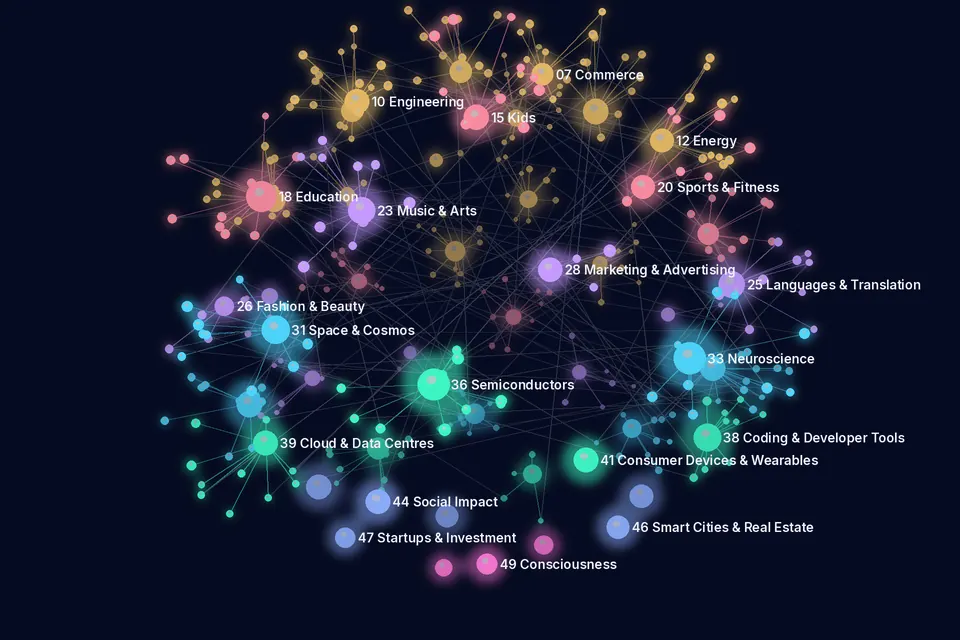

Journal of the AI Universe ✦ Research Papers Today
Research Papers Today
14 November 2026 · 1808 new AI research papers in 49 of the 50 categories · Curated by Dr.P.R.K.Varma
614 peer-reviewed papers and 1194 preprints, compiled automatically from arXiv, medRxiv, bioRxiv, PubMed, Crossref, OpenAlex, preprint servers via Crossref (Research Square, Preprints.org, SSRN and others), arxiv_rss, europepmc. Each line gives the title (linked), authors, venue, date, evidence label and identifier. Abstracts and figures are not reproduced: open the paper to read it. A listing is not an endorsement, and preprints have not been peer-reviewed. Health papers are not medical advice.
Research map in 3D
14 November 2026: the top 320 papers in 49 categories as a 3D network. Large points are categories, small points are papers (brighter = peer-reviewed), and faint lines join papers in different categories that share a topic word in their titles. Drag to rotate, pinch or use + and − to zoom, and tap a paper to open the original. Titles and links only.

Papers per category (49 categories)
01–14 Industries & Sectors 496 papers
01 AI Filmmaking
10 papers · 10 preprintsProject page →- VBot Exo2Ego Policy: Lightweight Data Collection and Exocentric-to-Egocentric Video GenerationTong Rao, Zhihao Zhang, Yuntian Wang et al.arXiv (cs.CV) · · Preprint · arXiv:2611.16417 · Open access
- From Seeing to Remembering: Brain-Informed Agentic Text-to-Video Generation for Enhancing MemorabilityShengqi Dang, Yi He, Jiaying Lei et al.arXiv (cs.CV) · · Preprint · arXiv:2611.15107 · Open access
- VibePrevisBench: Evaluating Agentic Coding for 4D Scene Generation in BlenderYuzhe Chen, Muxi Diao, Lele Yang et al.arXiv (cs.CV) · · Preprint · arXiv:2611.15789 · Open access
- Back to Pixels: Lifting Latent Video Diffusion into Pixel SpaceYanke Song, Shuo Chen, Chris Rockwell et al.arXiv (cs.CV) · · Preprint · arXiv:2611.17336 · Open access
- Reframing Video Inverse Tone Mapping as Blind Posterior Inference via Latent Luminance SupervisionHanwool Sul, Chang-Hoon Jeong, Kisung Shin et al.arXiv (cs.CV) · · Preprint · arXiv:2611.15146 · Open access
- TokenStream: Multi-Subject Personalized Video Generation with Token-wise LoRA and Guided AttentionHung Nguyen, Quang Qui-Vinh Nguyen, Khoi NguyenarXiv (cs.CV) · · Preprint · arXiv:2611.16897 · Open access
- TRACE: Trajectory Synchronization for Training-Free Resolution Extension in Video GenerationLibo Zhu, Fan Li, Zhixin Wang et al.arXiv (cs.CV) · · Preprint · arXiv:2611.15983 · Open access
- K2V: Generative Keyframing For Physically Plausible Video GenerationFelix O'Mahony, Daniel Olmeda Reino, Roberto Cipolla et al.arXiv (cs.CV) · · Preprint · arXiv:2611.17324 · Open access
- Spatial Foundry: A Multimodal Dataset for Spatial IntelligenceEthan Lin, Yang SongarXiv (cs.CV) · · Preprint · arXiv:2611.17318 · Open access
- Track4D: Representing Dense 3D Tracking for Video Diffusion ModelsYushi Lan, Zeren Jiang, Kelvin Li et al.arXiv (cs.CV) · · Preprint · arXiv:2611.15287 · Open access
02 AI Agriculture
25 papers · 17 peer-reviewed · 8 preprintsProject page →- A privacy preserving federated learning framework for rice leaf disease classification and severity estimation using indian field dataDebangana Ram, Manasi Gyanchandani, Akhtar Rasool et al.Scientific Reports · · Peer-reviewed · DOI 10.1038/s41598-026-76513-w · Open access
- Computer vision in precision poultry farming: evaluation of YOLO and transformer-based object detectors for dead broiler detection in farm inspection imagesUmurungi SN, Ufitikirezi JDM, Bumbálek R et al.Veterinary and animal science · · Peer-reviewed · DOI 10.1016/j.vas.2026.100923 · PMID 43022403 · Open access
- A lightweight deep learning model for pest and disease detection and classification in agarwood plant (Aquilaria Malaccensis Lam.)Wasswa Shafik, Rahayu Sukmaria Sukri, Nurul Hazlina Zaini et al.Journal Of Big Data · · Peer-reviewed · DOI 10.1186/s40537-026-01561-y · Open access
- A field phenotyping and machine-learning framework for density-adaptive assessment of maize radiation use efficiencyHuang G, Wang G, Wen W et al.Smart Agricultural Technology · · Peer-reviewed · DOI 10.1016/j.atech.2026.102730 · Open access
- Yield, Economic Performance, and Machine Learning-Based Prediction of Wheat across Diverse Cropping Systems and Varieties under Arid Conditions of Rajasthan, IndiaReager ML, Garai S, Shah MH et al.Smart Agricultural Technology · · Peer-reviewed · DOI 10.1016/j.atech.2026.102735 · Open access
- MOF Nanozyme Sensor Array Encodes Wavelength-Resolved Catalytic Fingerprints for Interpretable Pesticide ScreeningZhang L, Zhou B, Kabirifar P et al.ACS sensors · · Peer-reviewed · DOI 10.1021/acssensors.6c03815 · PMID 43023877
- Optimization of siderophore production by Westiellopsis sp. KM1 and evaluation of its biomass wet extract for rice growth under metal stress: An integrated response surface methodology and Machine learning approachDurairaj M, Ramesh P, Manivinoth V et al.Bioresource technology · · Peer-reviewed · DOI 10.1016/j.biortech.2026.136254 · PMID 43020150
- Predicting Post-TOP Assay PFCA Burdens in Soil and Water Using Machine Learning: A Precursor-to-Product Modeling ApproachOh E, Oh S, Lee YS et al.Environmental research · · Peer-reviewed · DOI 10.1016/j.envres.2026.126180 · PMID 43020411
- A Hybrid Deep Learning Framework with Attention Mechanism for Robust and Explainable Plant Disease ClassificationPrateek Mahapatra, Madhumita PandaAgricultural Science Digest - A Research Journal · · Peer-reviewed · DOI 10.18805/ag.d-6576 · Open access
- Anomaly Detection for Internet of Things Time Series Data Using Generative Adversarial Networks with Attention Mechanism in Smart AgricultureIgwe, Agu Felix, Ifeoma Benardine AsianubaIconic Research and Engineering Journals · · Peer-reviewed · DOI 10.64388/ire1725002
03 AI Defence
1 paper · 1 peer-reviewedProject page →- Predicting Military Training Outcome: A Prospective Cohort Study of Supervised Statistical Learning Classification Methods in British Army RecruitsO'Leary TJ, Carswell AT, Jackson S et al.Medicine and science in sports and exercise · · Peer-reviewed · DOI 10.1249/mss.0000000000004212 · PMID 43024823
04 AI Healthcare
204 papers · 122 peer-reviewed · 82 preprintsProject page →Research listing only, not medical advice.
- Verifiable summarization of electronic health records using large language models to support chart reviewVerma R, Alsentzer E, Strasser Z et al.Journal of the American Medical Informatics Association : JAMIA · · Peer-reviewed · DOI 10.1093/jamia/ocag181 · PMID 43024780
- Interpretable Artificial Intelligence for the Assessment of Mass Margin and Malignancy on Mammograms: A Reader StudyMoffett L, Barnett AJ, Ou YJ et al.Radiology. Imaging cancer · · Peer-reviewed · DOI 10.1148/rycan.250736 · PMID 43023837
- Decoding small cell lung cancer vulnerabilities: the AI pathway to next-gen therapeuticsLi M, Zhang L, Yu Z et al.NPJ precision oncology · · Peer-reviewed · DOI 10.1038/s41698-026-01705-6 · PMID 43020822
- Challenges for human oversight in detecting system malfunctions in AI-assisted medical diagnosticsSchlicker N, Tepohl C, Kholmovaia A et al.npj Digital Medicine · · Peer-reviewed · DOI 10.1038/s41746-026-03410-x · Open access
- Geographical targeting of active case-finding for tuberculosis in Pakistan using artificial intelligence software (SPOT-TB): a pragmatic, stepped wedge, cluster-randomised control trialMahfooz A, Latif A, Zaidi SMA et al.The Lancet. Global health · · Peer-reviewed · DOI 10.1016/j.langlo.2026.104090 · PMID 43020100
- Decoding cancer therapy resistance through advanced 3D organoid systemsYe R, Wang J, Xu W et al.Science advances · · Peer-reviewed · DOI 10.1126/sciadv.aei0485 · PMID 43024708
- OSS: Open suturing skills vision-based assessment challenge 2024-2025Hoffmann H, Bady S, Boer C et al.Medical image analysis · · Peer-reviewed · DOI 10.1016/j.media.2026.104359 · PMID 43019931
- Multicenter benchmarking of large language models for bladder cancer management recommendations from mpMRI reportsLi Z, Zhang C, Chen X et al.npj Digital Medicine · · Peer-reviewed · DOI 10.1038/s41746-026-03469-6 · Open access
- AI prescribing: clinical oversight must not be removed without robust evidenceAshar P, Abbasi M, Illamperuma I et al.BMJ · · Peer-reviewed · DOI 10.1136/bmj-2026-101445
- Artificial intelligence-tailored bowel preparation reduces laxative burden and promotes sustainable endoscopyLu YB, Lu SC, Huang YN et al.Gut · · Peer-reviewed · DOI 10.1136/gutjnl-2025-336200 · PMID 40803753
05 AI Finance
26 papers · 6 peer-reviewed · 20 preprintsProject page →Research listing only, not financial advice.
- Development and validation of a machine learning model to predict the daily risk of febrile neutropenia in patients with AML undergoing chemotherapyMervaala-Muroke A, Toivanen L, Ettala P et al.Communications Medicine · · Peer-reviewed · DOI 10.1038/s43856-026-02001-x · Open access
- Artificial intelligence for meteorological services in the low-altitude economy: Progress, challenges, and future directionsZiyong Cao, Xuelin ZHANG, Bin Lu et al.Intelligent Climate and Eco-Environment · · Peer-reviewed · DOI 10.1016/j.icee.2026.100020 · Open access
- Adaptive Machine Learning Framework for Stock Market Prediction under Non-Stationary ConditionsVictor Gbenga LIJOKA, B. C. Iloka, Hope Anyaragbu et al.Iconic Research and Engineering Journals · · Peer-reviewed · DOI 10.64388/ire1724981
- FedGATE: A Reputation-Aware Federated Learning Framework for Robust Healthcare Fraud Detection under Heterogeneous Institutional DataZhigang Xu, Man Zhong, Hongmu Han et al.Engineering Research Express · · Peer-reviewed · DOI 10.1088/2631-8695/aec1b7
- Enhancing Credit Card Fraud Detection Using Generative AI-Based Data AugmentationAmani Al-Ajlan, Aliyah Aljarallah, Shoug Alsaleem et al.Electronics · · Peer-reviewed · DOI 10.3390/electronics15225259 · Open access
- From Function to System: Artificial Intelligence and the Propagation of Economic ChangeArmando SternieriAI for Society · · Peer-reviewed · DOI 10.3390/aisoc1020011 · Open access
- Automating Asset Pricing Research: An Agentic Search for the SDFLopez-Lira A, Seyfi S, Tang YSSRN · · Preprint · DOI 10.2139/ssrn.7687261
- Drift-Resilient Explainable Graph Learning for Financial Fraud Detection: Joint Evaluation of Risk Calibration and Explanation StabilityYang J, Han XSSRN · · Preprint · DOI 10.2139/ssrn.7684419 · Open access
- AI-Enabled Accounting and Financial Reporting Quality: The Mediating Role of Internal Control Effectiveness in Omani Listed CompaniesRababah A, Madi A, Suwaid A et al.Preprints.org · · Preprint · DOI 10.20944/preprints202611.1403.v1 · Open access
- Candidate Execution-Time Windows and Intraday Market Microstructure: Evidence from High-frequency Volume, Machine Learning, and Trading TestsArora A, Duvvuri VSSRN · · Preprint · DOI 10.2139/ssrn.7685372
06 AI Law & Investigation
21 papers · 3 peer-reviewed · 18 preprintsProject page →Research listing only, not legal advice.
- The limits of planning, data, and AI: where the judgment of the human in the loop takes overAbbasi KBMJ · · Peer-reviewed · DOI 10.1136/bmj-2026-101449
- Beyond Infringement and Fair Use: Examining Generative AI, Unjust Enrichment and the Cultural CommonsIndra SapkotaJournal of Law and Intellectual Property Rights (JLIPR) · · Peer-reviewed · DOI 10.66566/jlipr/2026.v3n2.09 · Open access
- Graph retrieval-augmented generation for legal academic viewpoint question answering: knowledge-graph retrieval, evaluation, and hallucination analysisJia Liu, Jianhao TangFrontiers in Artificial Intelligence · · Peer-reviewed · DOI 10.3389/frai.2026.1922684 · Open access
- Evaluating Artificial Intelligence Tools for Forensic-Linguistic Analysis of Arabic Judicial Texts: A Layer-Based Comparative Case Study of Saudi JudgmentsAlshammari B, Alfraidi KN, Aljudaiey MO et al.Research Square · · Preprint · DOI 10.21203/rs.3.rs-10959403/v1 · Open access
- Amicus Brief of Pamela Samuelson and Christopher Jon Sprigman in Support of Neither Party in OpenAI Copyright Infringement Litigation, 1:25-md-03143-SHS-OTW, United States District Court, Southern District of New YorkSamuelson P, Sprigman CJSSRN · · Preprint · DOI 10.2139/ssrn.7697759 · Open access
- ChJGBench: A Comprehensive Benchmark for Chinese Legal Judgment Generation with Diagnostic EvaluationYinghao Hu, Linggang Kong, Qian Xiao et al.arXiv (cs.CL) · · Preprint · arXiv:2611.15639 · Open access
- The Theory of Cognitive Technological Intermediation and the Law in Artificial Intelligence and MedicineTellez Valdes JSSRN · · Preprint · DOI 10.2139/ssrn.7685801 · Open access
- The Overstated Cost of AI Fairness in Criminal JusticeIgnacio Cofone (University of Oxford), Warut Khern-am-nuai (McGill University)arXiv (cs.CY) · · Preprint · arXiv:2608.01299 · Open access
- Citation under Pressure: Legal Citation Integrity under Drafting Constraints and Verification FeedbackDubey H, Vatsal S, Meyers A et al.SSRN · · Preprint · DOI 10.2139/ssrn.7685839
- Towards Better Legal Reasoning LLMs: Signal Balancing and Reward SchedulingYinghao Hu, Qian Xiao, Yuting Huang et al.arXiv (cs.CL) · · Preprint · arXiv:2611.15346 · Open access
07 AI Commerce
10 papers · 2 peer-reviewed · 8 preprintsProject page →- Building Explainable Sales Intelligence Systems: A Product-Oriented Model for Embedding AI Insights into Enterprise Sales WorkflowsAakash NagareInternational Journal of Advanced Artificial Intelligence Research · · Peer-reviewed · DOI 10.55640/ijaair-v03i11-04 · Open access
- E-commerce demand prediction and data anomaly detection combining graph attention mechanism and graph neural networkLei WangInternational Journal of Innovative Computing and Applications · · Peer-reviewed · DOI 10.1504/ijica.2027.10082288
- The Code of Agentic CommerceVan Loo RSSRN · · Preprint · DOI 10.2139/ssrn.7687618
- Serving-Aligned Entire-Space Conversion Modeling via Click-Through Rate Knowledge DistillationPavel Dolin, Xun Zou, Jiatian Wu et al.arXiv (cs.LG) · · Preprint · arXiv:2611.15137 · Open access
- When the Algorithm Becomes the Brand: How Consumer-Facing Artificial Intelligence Builds Platform Brand Equity Through Customer Experience, and Why AI Literacy Weakens the EffectRahsepar M, Sheikh AResearch Square · · Preprint · DOI 10.21203/rs.3.rs-11693792/v1 · Open access
- When Does a Recommendation Spark Curiosity? Theory, Measurement, and Field EvidencePan Li, Alexander TuzhilinarXiv (econ.GN) · · Preprint · arXiv:2611.14938 · Open access
- Explainable Machine Learning for Omnichannel Demand Forecasting and Inventory Decision Support in Synthetic ExperimentsSiddique¹ MT, Nath² PC, Ayub² MI et al.Research Square · · Preprint · DOI 10.21203/rs.3.rs-11285040/v1 · Open access
- Forecasting Sales Delay through Time-aware Analysis of Sales Events in Textual ReportsMasaya Tsunokake, Yuta Koreeda, Yuhei Niwa et al.arXiv (cs.CL) · · Preprint · arXiv:2611.16704 · Open access
- An Extensive Evaluation of Machine Learning and Deep Learning Approaches for Sentiment Analysis: Insights from Amazon Customer ReviewsMuhammed Ihsan Corak, Cuiyuan Wang, Xiaowen ZhangarXiv (cs.LG) · · Preprint · arXiv:2611.16201 · Open access
- Human-Likeness and Conversational Preference Diverge for Synthesized Agent Speech in Customer-Service CallsJeffrey M. Girard, Antony D'Avirro, Jason Z. Zheng et al.arXiv (cs.CL) · · Preprint · arXiv:2611.16051 · Open access
08 AI Journalism
4 papers · 3 peer-reviewed · 1 preprintProject page →- Ground Truth-Oriented Fake News Detection Using Sentiment-Aware Hybrid Ensemble Learning and Bi-Directional LSTM NetworksInternational Journal of Wireless and Ad Hoc Communication · · Peer-reviewed · DOI 10.54216/ijwac.110102 · Open access
- Trust Adaptive Provenance Watermarking for Synthetic News BroadcastingSabil Maulana Fauzi, Muhammad Syaeful Yusuf, Qolbinisa QolbinisaBridging of Emerging AI and Media Broadcasting (BEAM) · · Peer-reviewed · DOI 10.68012/beam.v2i1.265 · Open access
- When More Metrics Do Not Improve Faithfulness Assessment: A Document-Level Evaluation of AI-Generated News SummariesCheng Chen, Alina Andreeva, Ramin Jalalpoor et al.Journal of advances in engineering and technology. · · Peer-reviewed · DOI 10.62177/jaet.v3i4.1811 · Open access
- One Fabrication Is Enough: A Fake News Article Changes the Forecasts of LLM Forecasting SystemsZeyu Zhang, Bradly C. StadiearXiv (cs.CR) · · Preprint · arXiv:2611.15102 · Open access
10 AI Engineering
21 papers · 7 peer-reviewed · 14 preprintsProject page →- Large Language Models as Digital Twins: a Distribution-Aware Questionnaire-Based EvaluationFrancesco Di Cursi, Chiara Boldrini, Andrea Passarella et al.arXiv (cs.AI) · · Preprint · arXiv:2611.16586 · Open access
- Explainable bearing fault diagnosis using Shapley additive explanations: Cross-dataset insights from time, frequency, and chaotic domainsAlonso Menéndez-González, Luis Magadán, Juan Carlos Granda et al.Knowledge-Based Systems · · Peer-reviewed · DOI 10.1016/j.knosys.2026.117310 · Open access
- A Localized Basis Structure in Physics-Informed Neural Network for Solving Elliptic ProblemsGwanghyun Jo, Hyeokjoo Park, Deok-Kyu JangAdvances in Applied Mathematics and Mechanics · · Peer-reviewed · DOI 10.4208/aamm.oa-2025-0312
- INTEGRATION OF ARTIFICIAL INTELLIGENCE METHODS AND SOLUTIONS IN NETWORK-CENTRIC CONTROL SYSTEMSSystems and Means of Informatics · · Peer-reviewed · DOI 10.14357/08696527260309
- A Physics-Informed Neural Network Surrogate for Two-Dimensional Field Prediction in a Steam Methane Reforming ReactorHao Xin, Ming Xia, Dmitry Yu. Murzin et al.Processes · · Peer-reviewed · DOI 10.3390/pr14223657 · Open access
- AI-Enhanced finite element analysis for optimal material selection in total knee replacementTawfeeq IS, Elwi TAFrontiers in bioengineering and biotechnology · · Peer-reviewed · DOI 10.3389/fbioe.2026.1959564 · PMID 43022714 · Open access
- Input Serialization in Zero-Shot LLM Fault Diagnosis of Rooftop Units: A Leakage-Controlled Evaluation of Nine ModelsKang Lai, Hu Wei, Yiyu CaiIntelligent infrastructure and construction · · Peer-reviewed · DOI 10.3390/iic2040017 · Open access
- Beyond governing-equation residuals: verification and validation of physics-informed neural networks for forward structural-dynamic response predictionBorun Das, Abir Nag BulbulFrontiers in Mechanical Engineering · · Peer-reviewed · DOI 10.3389/fmech.2026.1979675 · Open access
- AeroZoo: A Benchmark of Well-Posed Flow Problems for Foundation Models of AerodynamicsPeter Sharpe, Carmelo Gonzales, Corey Adams et al.arXiv (cs.LG) · · Preprint · arXiv:2611.17152 · Open access
- SUMNO: Spatially Unrolled Multigrid Neural Operator for Fluid Flow SurrogatesYingqi Hu, Nan Deng, Changxiao Shao et al.arXiv (physics.flu-dyn) · · Preprint · arXiv:2611.16341 · Open access
11 AI Robotics
111 papers · 7 peer-reviewed · 104 preprintsProject page →- Predictive controller design for image-based visual servoing in robot manipulator using event-triggered MPC and physics informed neural networkK. Dileep, S. J. Mija, N.K. ArunInternational Journal of Control · · Peer-reviewed · DOI 10.1080/00207179.2026.2761012
- Self-Supervised Online Robot-Agnostic Traversability Estimation for Open-World EnvironmentsHindel J, Bultmann S, Masnavi H et al.IEEE Robotics and Automation Letters · · Peer-reviewed · DOI 10.1109/lra.2026.3753831
- A UAV-based real-time detection system of flowering nectar plants using a lightweight deep learning modelDu M, Valente J, van Dooremalen C et al.Precision Agriculture · · Peer-reviewed · DOI 10.1007/s11119-026-10474-y · Open access
- GEP‐YOLO: A Lightweight Real‐Time Detection Model for Unmanned Aerial Vehicle Road Cracks Integrating Multi‐Module OptimizationYing Li, Xiaoling Zou, Fengjiang Li et al.Applied Research · · Peer-reviewed · DOI 10.1002/appl.70252 · Open access
- VLM-based multi-agent architecture for multifunctional robotic health attendant (RHA) using phase-prompt task designKim K, Windle J, Windle T et al.Frontiers in robotics and AI · · Peer-reviewed · DOI 10.3389/frobt.2026.1928137 · PMID 43021953 · Open access
- From text to touch: choosing how artificial intelligence communicates empathy in healthcareAlastair Howcroft, Maria Elena Giannaccini, Holly BlakeFrontiers in Psychology · · Peer-reviewed · DOI 10.3389/fpsyg.2026.2010347 · Open access
- PeirceTriadicNet: A Peircean Triadic Three-Branch Fusion Network for Non-Cooperative Signal Recognition in UAV CommunicationsChang C, Lu T, Li Z et al.Drones · · Peer-reviewed · DOI 10.3390/drones10110853 · Open access
- PolyMorphWBC: Whole-Body Control from End-Effector Trajectories for Quadrupedal Mobile Manipulation across Arm Morphologies with Extended ReachHeng Li, Yang Li, Yifan Duan et al.arXiv (cs.RO) · · Preprint · arXiv:2611.15117 · Open access
- HALO: Human-Aligned Data Collection for WhoLe-body MObile ManipulationShuai Yang, Fangyi Xu, Yishu Shen et al.arXiv (cs.RO) · · Preprint · arXiv:2611.16439 · Open access
- ManiLadder: Benchmarking Robot Manipulation Through a Categorized and Multi-Difficulty Level Task LadderChongkai Gao, Jieao Shi, Zhaoyu Mu et al.arXiv (cs.RO) · · Preprint · arXiv:2611.16374 · Open access
12 AI Energy
19 papers · 6 peer-reviewed · 13 preprintsProject page →- Model predictive-fractional control with support vector machine-based FDI detection for smart grid frequency regulationTolba MS, Ahmed H, Gulzar MM et al.Energy and AI · · Peer-reviewed · DOI 10.1016/j.egyai.2026.100960 · Open access
- AI-enabled rooftop solar mapping and optimization: A computer vision approach for photovoltaic systemsSyed Muhammad Daniyal, Abdul Ahad Abro, Mohsin Mubeen Abbasi et al.Energy Reports · · Peer-reviewed · DOI 10.1016/j.egyr.2026.109893 · Open access
- Validating the Prompt Engineering Expertise Battery (PEEB) as a Combined Self-Report and Performance-Based Measure for Generative AIHend Suliman Al-Khalifa, Sumyah A. Alnajashi, Asma Aljhani et al.International Journal of Human-Computer Interaction · · Peer-reviewed · DOI 10.1080/10447318.2026.2755692
- Artificial Intelligence for Combustion-State Sensing and Prediction in Internal Combustion Engines Across Multiple Fuel Types: A ReviewCai K, Ma C, Dou Q et al.Energy and AI · · Peer-reviewed · DOI 10.1016/j.egyai.2026.100970 · Open access
- Single-kernel near-infrared spectroscopy enables haploid kernel sorting in field and sweet corn using high-oil haploid inducers across diverse donor-inducer combinationsSharma S, Gustin JL, Frei UK et al.TAG. Theoretical and applied genetics. Theoretische und angewandte Genetik · · Peer-reviewed · DOI 10.1007/s00122-026-05424-1 · PMID 43023996
- Intelligent energy management of a novel non-isolated bidirectional dual-input single-output converter for electric vehicle applicationsM R FB, R JFrontiers in artificial intelligence · · Peer-reviewed · DOI 10.3389/frai.2026.1950048 · PMID 43022035 · Open access
- A Three-Stage Unsupervised Online Physics-Informed Neural Network for Microgrid Optimal Power FlowAbinash Giri, Yi HuarXiv (eess.SY) · · Preprint · arXiv:2611.14716 · Open access
- Towards Efficient Edge AI for Power Flow in Renewable-Rich Grids with Volt/VAR ControlShahariya R. R. Puthanpurayil, Vlad A. Sanduleac, Remus TeodorescuarXiv (eess.SY) · · Preprint · arXiv:2611.15181 · Open access
- TDMOpt: LLM-Driven Cross-layer Dispatch for Transmission-Distribution-Microgrid SystemsJiayang Tu, Bojun Du, Jijun Shui et al.arXiv (eess.SY) · · Preprint · arXiv:2611.15012 · Open access
- Price co-movement and price information diverge across Nordic electricity zones after the energy crisisMy Thi Diem Phan, Tuyen Trung Truong, Hoai Phuong Ha et al.arXiv (econ.GN) · · Preprint · arXiv:2611.16657 · Open access
13 AI Transportation
37 papers · 12 peer-reviewed · 25 preprintsProject page →- Illusion of Depth: Revealing Hidden Stereo Vision Vulnerabilities in Depth EstimationSri Hrushikesh Varma Bhupathiraju, Tetsu Ishizue, Nicholas U. Costagliola et al.ACM SIGSAC Conference on Computer and Communications Security (CCS) · · Peer-reviewed · DOI 10.1145/3830454.3832649 · Open access
- Heterogeneous safety effects of right-turn protection and two-stage crossing treatments on non-motorized vehicle crashes at intersectionsNie C, Wang X, Wang B et al.Accident; analysis and prevention · · Peer-reviewed · DOI 10.1016/j.aap.2026.108874 · PMID 43019754
- Accumulation characteristics, driving mechanisms, and simulation prediction of PAHs in soils surrounding typical industrial parks in BeijingQiao P, Wang S, Guo G et al.Journal of hazardous materials · · Peer-reviewed · DOI 10.1016/j.jhazmat.2026.144201 · PMID 43019981
- AURORA-ETC: Lifelong Encrypted Traffic Classification Through Self-Supervised Pretraining and AutoML-Guided AdaptationFardous S, Sharif K, Li F et al.IEEE Transactions on Dependable and Secure Computing · · Peer-reviewed · DOI 10.1109/tdsc.2026.3753610
- Surveillance video-based traffic accident detection using transformer architectureSingh T, Chakraborty P, Truong LTTraffic injury prevention · · Peer-reviewed · DOI 10.1080/15389588.2026.2756522 · PMID 43023988
- Frequency-Domain Mixing Data Augmentation for Malicious Traffic DetectionYuhao Yan, Bo Lang, Xiangyu LiACM SIGSAC Conference on Computer and Communications Security (CCS) · · Peer-reviewed · DOI 10.1145/3830454.3846642 · Open access
- TDDM-Melatt: A Decoupled Memory and Diffusion Framework for Generalizable Encrypted Traffic ClassificationZe Chen, Qiming Yu, Zijia Song et al.ACM SIGSAC Conference on Computer and Communications Security (CCS) · · Peer-reviewed · DOI 10.1145/3830454.3846533 · Open access
- Filtering Critical Regions and Enhancing Discriminative Features With Transformer for Aircraft Recognition in SAR ImagesShang Y, Pu W, Wu C et al.IEEE transactions on neural networks and learning systems · · Peer-reviewed · DOI 10.1109/tnnls.2026.3748628 · PMID 43024548
- Modeling and Interpreting Accident Severity in Autonomous Vehicles: A ROSE-LightGBM-SHAP FrameworkYi Hou, Shaoping Wu, Chunjiao Dong et al.SAE technical papers on CD-ROM/SAE technical paper series · · Peer-reviewed · DOI 10.4271/2026-99-2012
- Evaluation of PSO-Tuned DBSCAN and Local Hash-Linked Recording of Synthetic Power Quality Disturbances in Electric Vehicle Charging and Electromobility SystemsHusham Idan Hussein, Francisco Jesús Muñoz Gutiérrez, Alejandro RodríguezElectronics · · Peer-reviewed · DOI 10.3390/electronics15225244 · Open access
14 AI Manufacturing
7 papers · 2 peer-reviewed · 5 preprintsProject page →- Explainable Artificial Intelligence in Manufacturing: A Narrative Review of Engineering Validation and Decision SupportCosmin Constantin Grigoraș, Valentin Zichil, Vlad Andrei CiubotariuJournal of Manufacturing and Materials Processing · · Peer-reviewed · DOI 10.3390/jmmp10110503 · Open access
- Research on an Improved YOLO-Based Algorithm for Underwater Weld Seam DetectionLeigang Han, Mingzhi Yao, Junxia Wu et al.Materials · · Peer-reviewed · DOI 10.3390/ma19224812 · Open access
- Dual Representation Enhanced Diffusion Policy for Flexible Job Shop SchedulingYunyi Zhao, Wei Zhang, Cheng Xiang et al.arXiv (cs.LG) · · Preprint · arXiv:2611.15246 · Open access
- Multimodal Foundation Models for Industrial Dataset Generation: Methods, Evidence, and Open ChallengesWang R, Zeng D, Ma X et al.Preprints.org · · Preprint · DOI 10.20944/preprints202611.1392.v1 · Open access
- Combinatorial Bernoulli Factories with Polynomially Many CoinsRenato Paes Leme, Rad NiazadeharXiv (cs.DS) · · Preprint · arXiv:2611.17223 · Open access
- SkinAdvisor: An AI-Driven Decision Framework for Skin Production Planning via Multi-Modal Transformer Sales ForecastingGe Fan, Kai Wang, Chaoyun Zhang et al.arXiv (cs.LG) · · Preprint · arXiv:2611.15023 · Open access
- Benchmarking LLM-generated heuristics for the multi-objective flexible job shop: an anchored comparison against exact and metaheuristic methodsUribe A, Fornies-Tabuenca D, Otamendi U et al.Research Square · · Preprint · DOI 10.21203/rs.3.rs-11359760/v1 · Open access
15–20 People & Life Stages 127 papers
15 AI Kids
11 papers · 6 peer-reviewed · 5 preprintsProject page →- Parent-in-the-loop: is it time for AI-supported parental shared decision-making in the neonatal intensive care unit?Jull H, Owens J, Woolf SJ Med Ethics · · Peer-reviewed · DOI 10.1136/jme-2025-111640 · PMID 43020647
- Electronic Children's Hospital Early Warning Score: Development and Validation of a Novel Machine Learning Algorithm Predicting Critical Deterioration Events in a Retrospective, Single-Center CohortSaleh L, Akhondi-Asl A, Kleinman ME et al.Pediatric critical care medicine : a journal of the Society of Critical Care Medicine and the World Federation of Pediatric Intensive and Critical Care Societies · · Peer-reviewed · DOI 10.1097/pcc.0000000000004112 · PMID 43023816
- Deep learning–based cephalometric diagnosis of adenoid hypertrophy in childrenMingjiang Xia, Yan Chen, Yao Wang et al.BMC Medical Imaging · · Peer-reviewed · DOI 10.1186/s12880-026-03005-8 · Open access
- Harm Reduction for Adolescent AI Chatbot UseHinduja SJ Adolesc Health · · Peer-reviewed · DOI 10.1016/j.jadohealth.2026.09.002 · PMID 43018531
- Unlocking the Ability of Generative Artificial Intelligence to Improve Health Communication and Health EducationAmin KS, Skaggs DL, Doshi RH et al.Preventing chronic disease · · Peer-reviewed · DOI 10.5888/pcd23.260490 · PMID 43023549
- A Knowledge Graph-Enhanced Question-Answering System for Chinese Patent Medicines in Pediatric Influenza: Development and Evaluation StudyLi H, Zhao G, Zong X et al.JMIR AI · · Peer-reviewed · DOI 10.2196/101648 · PMID 43024798
- Proximity to Facilities Receiving Continuous Drone-supported Deliveries and Treatment Receipt among Children Seeking Public Care in Nigeria: A Cluster-matched Analysis of DHS 2023-24 DataOspina-Fadul MJ, Kremer P, Goddey N et al.SSRN · · Preprint · DOI 10.2139/ssrn.7686540
- Support-Constrained Offline Policy Improvement for Pediatric ECMO from Limited Clinical DataFateme Golivand Darvishvand, Saurabh Mathur, Nikhilesh Prabhakar et al.arXiv (cs.LG) · · Preprint · arXiv:2611.17134 · Open access
- An Approach to Hinton's Mother-Child Proposal: Neural Networks Learning and Preserving Care in a Finite WorldCsaba BalogharXiv (cs.LG) · · Preprint · arXiv:2611.15523 · Open access
- DxToniaNet: A Neural Network for Estimating the Severity of Leg Dystonia in Children with Cerebral PalsyBajpai R, Rust A, Lott E et al.medRxiv (Neurology) · · Preprint · DOI 10.64898/2026.11.11.26367859 · Open access
16 AI Geriatric
11 papers · 7 peer-reviewed · 4 preprintsProject page →- ClinicalAge, a framework for modelling ageing trajectories from longitudinal electronic health records in the UK: a model development and validation studyLian J, Fan Z, Fan W et al.The Lancet. Digital health · · Peer-reviewed · DOI 10.1016/j.landig.2026.101060 · PMID 43020745 · Open access
- Prognostic Clinical Changes During the Last 3 Months of Life Among Nursing-home Residents: An Explainable Machine-Learning StudyFukui S, Shimatani K, Noguchi-Watanabe M et al.Journal of the American Medical Directors Association · · Peer-reviewed · DOI 10.1016/j.jamda.2026.106514 · PMID 43019991
- Radiomics-based risk prediction: survival in sarcopenic gastrointestinal and genitourinary cancer cohorts using a population-specific sarcopenia definitionLetchumanan N, Hanaoka S, Sugawara K et al.European radiology experimental · · Peer-reviewed · DOI 10.1186/s41747-026-00848-2 · PMID 43024160
- Childhood circumstances as predictors of self-rated health status in middle-aged and older adults: Evidence from a machine learning analysis in 27 high-income countriesZong X, Silventoinen K, Martikainen P et al.Annals of epidemiology · · Peer-reviewed · DOI 10.1016/j.annepidem.2026.110315 · PMID 43020162
- Risk prediction for venous thromboembolism among older adult internal medicine inpatients: development and validation of a machine learning-based modelZhenfei Chen, Chenglin Yang, Jiaze Dai et al.BMC Geriatrics · · Peer-reviewed · DOI 10.1186/s12877-026-08691-1 · Open access
- Impact of AI-assisted Sedation on Early Cognitive Function and Sleep Quality in the Elderly Undergoing GI EndoscopyXu C, Huang L, Wu L et al.Current neurovascular research · · Peer-reviewed · DOI 10.2174/0115672026486179261027064059 · PMID 43023273
- Efficient neuroanalytic local-global learning with dual-branch CNN-lightweight Swin Transformer for Alzheimer's disease analysisKhan SH, Iqbal R, Alqahtani S et al.Frontiers in computational neuroscience · · Peer-reviewed · DOI 10.3389/fncom.2026.1972923 · PMID 43022197 · Open access
- A Dementia Caregiver AI Chat Tool: Development of Darci and Comparison Testing with A Commercially Available Tool. (Preprint)Gallagher VT, Ansari S, Yildirim N et al.JMIR Preprints · · Preprint · DOI 10.2196/preprints.116082 · Open access
- Digitally Supported Transitional Care Pathways for Older Adults: A Multi-Site Co-Design StudyCamilla Gabrielsen, Roberta Bevilacqua, Lorena Rossi et al.arXiv (cs.ET) · · Preprint · arXiv:2611.16463 · Open access
- Morphological Simplification in Alzheimer's Disease: Computational Analysis and Identification From Connected SpeechMohamed Zakaria KurdiarXiv (cs.CL) · · Preprint · arXiv:2611.16968 · Open access
17 AI Psychology
21 papers · 11 peer-reviewed · 10 preprintsProject page →Research listing only, not medical advice.
- Liver radiomics on routine cardiac CT identifies hepatic stress states that predict heart failureModanwal G, Dhamdhere R, Singh A et al.European heart journal. Cardiovascular Imaging · · Peer-reviewed · DOI 10.1093/ehjci/jeag281 · PMID 43021502
- AI-powered Schizophrenia Screening with Consideration of Facial Feature and Privacy ProtectionZhao G, Liu X, Chen Y et al.IEEE journal of biomedical and health informatics · · Peer-reviewed · DOI 10.1109/jbhi.2026.3753632 · PMID 43024545
- Patient-Centred Communication About AI-Related Information in Perioperative Care: An Attention-Controlled Randomised Trial of Anxiety, Perceived Control and Interpretive PreparednessGökmen V, Gökmen BDHealth expectations : an international journal of public participation in health care and health policy · · Peer-reviewed · DOI 10.1111/hex.70838 · PMID 43023700
- Hybrid Clinician-in-the-Loop Monitoring System for LLM Conversational AgentsChaewon Yun, Rodrigo Bermúdez Schettino, Brooke C. Schneider et al.ACM Transactions on Intelligent Systems and Technology · · Peer-reviewed · DOI 10.1145/3838183
- Positive emotions under tension in GenAI-assisted L2 writing: A complex dynamic systems perspectiveGong W, Jin LActa psychologica · · Peer-reviewed · DOI 10.1016/j.actpsy.2026.108138 · PMID 43019944
- Generative adversarial network-augmented and multi-model fusion-based prediction of effective notch stress concentration factors in double-sided rib-to-deck welds of orthotropic steel decksZhang F, Wang Q, Ji B et al.Engineering Applications of Artificial Intelligence · · Peer-reviewed · DOI 10.1016/j.engappai.2026.116780
- Study planning is better served by Monte Carlo simulation than AI-generated participantsCummins JCommunications psychology · · Peer-reviewed · DOI 10.1038/s44271-026-00556-y · PMID 43015357 · Open access
- AI as therapist or assistant? Opportunities and boundaries of artificial intelligence in mental health careGirishkumar Modi, Yushi Modi, Zeeya ModiMental Health and Social Inclusion · · Peer-reviewed · DOI 10.1108/mhsi-08-2026-0308
- Effectiveness of Conversational Agents for Depression and Anxiety: Systematic Review and Network Dose-Response Meta-Analysis of Agent Types, Dose, and Human SupportYang P, Chui PL, He M et al.Journal of Medical Internet Research · · Peer-reviewed · DOI 10.2196/104186
- A Web-Based Risk Calculator for Psychological Distress in Stable Chronic Obstructive Pulmonary Disease: Development and Validation StudyChen H, Zuo F, Zhang J et al.Chronic obstructive pulmonary diseases (Miami, Fla.) · · Peer-reviewed · DOI 10.15326/jcopdf.2026.0808 · PMID 43023932
18 AI Education
60 papers · 37 peer-reviewed · 23 preprintsProject page →- LLMs and the Homogenization of TeachingMei Tan, Hyunji Nam, Hari Subramonyam et al.arXiv (cs.CL) · · Preprint · arXiv:2611.14828 · Open access
- Do Hackers Dream of Electric Teachers?: A Large-Scale, In-Situ Measurement of Cybersecurity Student Behaviors and Educational Performance with AI TutorsMichael Tompkins, Nihaarika Agarwal, Ananta Soneji et al.ACM SIGSAC Conference on Computer and Communications Security (CCS) · · Peer-reviewed · DOI 10.1145/3830454.3846694 · Open access
- Three Years with Classroom AI in Introductory Programming: Shifts in Student Awareness, Interaction, and PerformanceBoxuan Ma, Huiyong Li, Gen Li et al.ACM Transactions on Computing Education · · Peer-reviewed · DOI 10.1145/3862769 · Open access
- ChatGPT-related research in medical education: A dual-database bibliometric review and science-mapping analysis, 2023 to 2026Liu J, Huang WMedicine · · Peer-reviewed · DOI 10.1097/md.0000000000051438 · PMID 43024310
- Pedagogical AI Agents as Teacher-Authored Instructional Proxies: Conceptualization and Illustrative DesignLan YJ, Chen NSComputers and Education: Artificial Intelligence · · Peer-reviewed · DOI 10.1016/j.caeai.2026.100692 · Open access
- AI and the future of quantitative health and medical geography: Implications for teaching and trainingWidener MJ, Cao Y, DeJohn A et al.Health & place · · Peer-reviewed · DOI 10.1016/j.healthplace.2026.103767 · PMID 43019681
- Enhancing diagnostic and intervention-related skills with adaptive feedback: Study protocol for a simulation-based learning study on symptoms of learning and behavioural difficultiesNiklas F, Ufer S, Isik D et al.PloS one · · Peer-reviewed · DOI 10.1371/journal.pone.0361425 · PMID 43024674
- Book Review: Teaching with AI: A Practical Guide to a New Era of Human Learning Second EditionMartin R. JonesChristian Higher Education · · Peer-reviewed · DOI 10.1080/15363759.2026.2746110
- From web-based interaction to generative AI: two decades of research in Interactive Learning Environments (2006–2025)Awal Kurnia Putra Nasution, Abdul Hamid K, R MursidInteractive Learning Environments · · Peer-reviewed · DOI 10.1080/10494820.2026.2761994
- What Makes Learning with GenAI Effective? Text Support and Deeper Engagement are Associated with Higher Performance in an Ecology ContextLars Dietrich, Laura Fink, Detlef Urhahne et al.Journal of Science Education and Technology · · Peer-reviewed · DOI 10.1007/s10956-026-10374-w · Open access
19 AI Work & Employment
17 papers · 6 peer-reviewed · 11 preprintsProject page →- Examining the role of AI in the future of work: A case study of university students in PakistanWajahat Usman, Sayed Abdul Majid Gilani, Raymond Lihe et al.Social Sciences & Humanities Open · · Peer-reviewed · DOI 10.1016/j.ssaho.2026.103915 · Open access
- Improving the accuracy of competency based hiring decision models by generating job competency feature distributions using diffusion modelsGuangyu LiDiscover Artificial Intelligence · · Peer-reviewed · DOI 10.1007/s44163-026-02739-2 · Open access
- Navigating digital strain: The role of overload, trust, and agentic AI dependence in predicting employee adverse outcomesNguyen M, Nham TP, Alghafes R et al.Acta psychologica · · Peer-reviewed · DOI 10.1016/j.actpsy.2026.107956 · PMID 43019947
- Nine raters, one index: Carrying LLM disagreement into labour-market estimatesHenseke G, Davies R, Felstead A et al.Technological Forecasting and Social Change · · Peer-reviewed · DOI 10.1016/j.techfore.2026.124933
- The Ubiquity Problem in Enterprise AI: Occupational Embedding as Management Innovation and the Relocation of Strategic AdvantageRamon George AtentoJournal of Enterprise Strategy and Management Innovation · · Peer-reviewed · DOI 10.65166/21fmda70
- AI Powered Placements Preparation Portal: A Unified Web Platform for Campus Recruitment PreparationD.Kaveri G. Srivan Ch. Mahima K. AkshayaInternational Journal of Engineering Research and Science & Technology · · Peer-reviewed · OpenAlex W7225966423 · Open access
- Who Moved the Career Ladder? AI and Young Workers in KoreaOh S, Oh YSSRN · · Preprint · DOI 10.2139/ssrn.7684559 · Open access
- Work after AI 2026: The Great Misconception about the AI Job KillerKuerner GSSRN · · Preprint · DOI 10.2139/ssrn.7686783
- Human Capital in Context: What Employment Survival Reveals About Worker-Firm MatchJung Ho Choi, Mario MilonearXiv (cs.LG) · · Preprint · arXiv:2611.16058 · Open access
- Confronting And Alleviating AI Resistance In The Workplace: An Integrative Review And A Process FrameworkGolgeci I, Ritala P, Arslan A et al.SSRN · · Preprint · DOI 10.2139/ssrn.7698329 · Open access
20 AI Sports & Fitness
7 papers · 3 peer-reviewed · 4 preprintsProject page →- COMPUTER VISION AND ARTIFICIAL INTELLIGENCE FOR AUTOMATED OFFSIDE DETECTION IN FOOTBALL: A SCOPING REVIEWAndré Oliveira Silva, Reginaldo Alves de Sousa, Leonardo Cardia da CruzMultiCientífica Brasil - Congresso Nacional Multidisciplinar · · Peer-reviewed · DOI 10.56238/iimulticientifica-202
- AI-based personalized exercise and health recommendation system using hybrid modelingSarthak Singh, Adarsh Singh, Ayush Tiwari et al.Frontiers in Artificial Intelligence · · Peer-reviewed · DOI 10.3389/frai.2026.1815026 · Open access
- An Adaptive Human-in-the-Loop Generative AI Framework for Professional-Supported Pronunciation Exercise Design: Ex Ante Evaluation in Down SyndromeGeovanny Cudco, Mayra Álvarez-Jiménez, Héctor Pinto et al.Big Data and Cognitive Computing · · Peer-reviewed · DOI 10.3390/bdcc10110387 · Open access
- Trait-Level Rather Than Individual-Level Resolution in Fitness Genomics: A Population-Calibrated Variant Prioritization Framework in a South Asian CohortUPPALURI K R, Challa H J, Vempati K K et al.medRxiv (Nutrition) · · Preprint · DOI 10.64898/2026.11.10.26367795 · Open access
- One Hierarchy, Many Sports: Hierarchy-Aligned Multi-Task Learning for Next-Shot PredictionChao-Wei Cai, Min-Te Sun, Sheng Kuang Wu et al.arXiv (cs.LG) · · Preprint · arXiv:2611.15529 · Open access
- A Modified Glicko Model for Rating Soccer Clubs and National Teams WorldwideAndrei Shelopugin, Alexander SirotkinarXiv (cs.LG) · · Preprint · arXiv:2611.15378 · Open access
- SciSelect-Gym: An Environment and Benchmark for Active Learning and Bayesian Optimization Configuration SelectionYing-Peng Tang, Tianle Zhang, Wanlong Fang et al.arXiv (cs.CE) · · Preprint · arXiv:2611.15154 · Open access
21–29 Culture & Belief 72 papers
21 AI Spirituality
4 papers · 1 peer-reviewed · 3 preprintsProject page →- Governing religious outputs of generative AI: a maqāṣid -based framework in light of fiqh al-maʾālātAli Samoh, Husein SamohCogent Arts and Humanities · · Peer-reviewed · DOI 10.1080/23311983.2026.2759439 · Open access
- AraCrypto-ML: A Multi-Label Corpus of Communicative Functions in Arabic Facebook Cryptocurrency DiscourseMabrouka Bessghaier, Mohamed Rashad Rouine, Md. Rafiul Biswas et al.arXiv (cs.CL) · · Preprint · arXiv:2611.15408 · Open access
- Mapping Feature Drift: Cross-Layer Correspondence and Polysemanticity in Qwen2.5-3bAdit SResearch Square · · Preprint · DOI 10.21203/rs.3.rs-11706467/v1 · Open access
- Al-Ghasali: A Computational Framework for Simulating Islamic Jurisprudential Rulings via Finite State Automata and Large Language ModelsElnaserledinellah Mahmoud AbdelwahabarXiv (cs.AI) · · Preprint · arXiv:2611.17235 · Open access
22 AI Mythology
1 paper · 1 preprintProject page →- HeriKGQA: Grounded Knowledge-Graph Question Answering over Cultural Heritage Sensor DataLingxiao Kong, Vasileios Arampatzakis, Vasileios Sevetlidis et al.arXiv (cs.CL) · · Preprint · arXiv:2611.15904 · Open access
23 AI Music & Arts
13 papers · 4 peer-reviewed · 9 preprintsProject page →- XR Dance Creativity with AIKenny Mitchell, Alexandra Schmuklermann, Noshaba CheemaSIGGRAPH Asia Real-Time Live! · · Peer-reviewed · DOI 10.1145/3829334.3849473 · Open access
- Deep Learning and Computer Vision-Based Art Style Evaluation Model for Digital PaintingWei Tang, Defeng Yu, Tao Zhang et al.International Journal of e-Collaboration · · Peer-reviewed · DOI 10.4018/ijec.427556 · Open access
- Exploring Ethical Controversies in AI-Generated Art Based on Fundamental PrinciplesXiaosheng Lin, Ziran HuangComputing&AI Connect · · Peer-reviewed · DOI 10.69709/caic.2026.116261 · Open access
- Supporting creative agency: metacognitive control and trust in generative AI art educationZhu RFrontiers in psychology · · Peer-reviewed · DOI 10.3389/fpsyg.2026.1997631 · PMID 43021959 · Open access
- Evaluating AI Musical Creativity: Towards a Quantitative Multi-Dimensional Framework Based on Value, Novelty, and SurpriseHindy Rossignol, Giorgio Franceschelli, Mirco MusolesiarXiv (cs.SD) · · Preprint · arXiv:2611.14634 · Open access
- Evaluation of Music Version Retrieval Methods for Setlist Identification in Live ConcertsAndres Ferraro, Albin CorreyaarXiv (cs.IR) · · Preprint · arXiv:2611.17070 · Open access
- MusicRWKV: A Multimodal RWKV Framework for Music Representation LearningTerry TanarXiv (cs.SD) · · Preprint · arXiv:2611.16718 · Open access
- Reliable Near-Field Source Enumeration and Positioning Informed by Two-Stage MUSICJiaying Li, Haifeng Wen, Changsheng You et al.arXiv (eess.SP) · · Preprint · arXiv:2611.15722 · Open access
- Computational Raga Recognition: A Theory-Driven ApproachJanay Sukheja, Shailaja D. SharmaarXiv (cs.SD) · · Preprint · arXiv:2611.15242 · Open access
- Lines Are Ideas: Visual Creativity Assessment in Hyperbolic SpaceBaoliang Chen, Zihao Lin, Hao Liu et al.arXiv (cs.CV) · · Preprint · arXiv:2611.14907 · Open access
24 AI Literature
2 papers · 2 preprintsProject page →- CineMME: From Dialogue Grounding to Narrative Reasoning in Multimodal Video UnderstandingJin Liu, Dawei Du, Yexiang Liu et al.arXiv (cs.CV) · · Preprint · arXiv:2611.15161 · Open access
- Eliminating Polarity Hallucinations and Order Book Horizon Truncation Bias in Autonomous Multi-Agent Quantitative Systems: Schmitt-Trigger Factor Ontologies, Scroll-Out Resistant Deep OFI, and Slippage-Proof PyramidingHashimoto KSSRN · · Preprint · DOI 10.2139/ssrn.7684736 · Open access
25 AI Languages & Translation
32 papers · 6 peer-reviewed · 26 preprintsProject page →- MITRA-Swarm: Injecting Explicit Linguistic Structure into Foundation Models for Classical Machine TranslationKayshav Bhardwaj, Pragun Seth, Kush Bhardwaj et al.arXiv (cs.CL) · · Preprint · arXiv:2611.14675 · Open access
- Advancing Grammar Error Correction in informal digital communication: a hybrid CNN-BART approach with adaptive noise modelingTanzila Kehkashan, Muhammad Abdullah, Ahmad Sami Al‐Shamayleh et al.Scientific Reports · · Peer-reviewed · DOI 10.1038/s41598-026-76945-4 · Open access
- A cross-domain stacked ensemble for model-aware detection of AI-generated Arabic textZita K, Nehar A, Khelil A et al.Language Resources and Evaluation · · Peer-reviewed · DOI 10.1007/s10579-026-09967-z
- English translation enhancement technology supported by deep learning and knowledge graphsCui JingDiscover Artificial Intelligence · · Peer-reviewed · DOI 10.1007/s44163-026-02134-x · Open access
- Lexico-syntactic complexity in human and AI-generated outputs across interpreting and translation: a paired-corpus studyYili DanJournal of China Computer-Assisted Language Learning · · Peer-reviewed · DOI 10.1515/jccall-2026-0029 · Open access
- Innovative NLP-Based Architecture for Computer-Assisted Translation ToolsErse LiuInternational Journal of Knowledge Management · · Peer-reviewed · DOI 10.4018/ijkm.427553 · Open access
- СЕМАНТИЧЕСКАЯ ЭКВИВАЛЕНТНОСТЬ В МАШИННОМ ПЕРЕВОДЕ ХУДОЖЕСТВЕННЫХ ТЕКСТОВ С РУССКОГО ЯЗЫКА НА УЗБЕКСКИЙ: СОПОСТАВИТЕЛЬНЫЙ АНАЛИЗ GOOGLE TRANSLATE И CHATGPTАдилова Дилором КадировнаQo‘qon DPI Ilmiy xabarlar jurnali · · Peer-reviewed · DOI 10.70728/b.series.fil.v08.i10.083
- Dynamic Block-Online Streaming ASR for Low-Resource Agglutinative Code-Switching Speech with Morphology-Aware EvaluationKazi Rafat, Afifa Imran, Md. Ismail Hossain et al.arXiv (cs.CL) · · Preprint · arXiv:2611.15691 · Open access
- IsharaBART: An efficient BART-Based Framework for Low-Resource Bangla Sign Language TranslationAonmoy Das, Ananna Dev Aishi, Md. Fazlul KaderarXiv (cs.CL) · · Preprint · arXiv:2611.16359 · Open access
- Low Language Transfer Speech-to-TextHusein ZolkepliarXiv (cs.CL) · · Preprint · arXiv:2611.16260 · Open access
26 AI Fashion & Beauty
5 papers · 4 peer-reviewed · 1 preprintProject page →- Enhanced skin tone and blood estimation through AI-enabled upscaling of discrete reflectance spectraRathod M, Lee M, Wu J et al.npj Digital Medicine · · Peer-reviewed · DOI 10.1038/s41746-026-03429-0 · Open access
- ASIA: adaptive single-diffusion-stage inference acceleration for diffusion-based virtual try-onShrouk Mansour, Eid Mohamed Elemry, Asmaa A. E. Osman et al.Scientific Reports · · Peer-reviewed · DOI 10.1038/s41598-026-74469-5 · Open access
- Stitching innovation in fashion retail: a systematic review of barriers to digital technology adoption, including AI and marketing automation, in women-led SMEsPedro Y, Weiss-Sidi M, Gelts Tel-Paz IJournal of Fashion Marketing and Management: An International Journal · · Peer-reviewed · DOI 10.1108/jfmm-07-2025-0391
- Automating beauty: Detecting facial changes in platform beauty filtersCoffey J, Hawker K, Dobson A et al.Convergence: The International Journal of Research into New Media Technologies · · Peer-reviewed · DOI 10.1177/13548565261505449 · Open access
- AIFR: Adaptive Identity Feature Recovery for Diffusion-Based Makeup and Anime PortraitsLinyan Dai, Xinwei Zhang, Yaxin Xiao et al.arXiv (cs.CV) · · Preprint · arXiv:2611.15764 · Open access
27 AI Travel & Hospitality
6 papers · 3 peer-reviewed · 3 preprintsProject page →- Architecting & Engineering Production-Grade Agentic AI for Industry-Specific NeedsRimjhim Padam SinghInternational Journal For Multidisciplinary Research · · Peer-reviewed · DOI 10.36948/ijfmr.2026.v08i06.91853
- Improving Travel Mode Choice Predictions for Minority Modes with a Conditional Variational Autoencoder to Address Class ImbalancePatricio Salas, Rodrigo A. De la Fuente, Sebastián Astroza et al.Transportation Research Record Journal of the Transportation Research Board · · Peer-reviewed · DOI 10.1177/03611981261500400
- Applications, ethics, and future agenda of generative artificial intelligence (GenAI) in tourism and hospitality: a systematic reviewHo WI, Yin Y, Yu Y et al.Frontiers in artificial intelligence · · Peer-reviewed · DOI 10.3389/frai.2026.1935676 · PMID 43021968 · Open access
- Who chooses and who keeps time? Typology-grounded LLM user modelling and explained itineraries for cultural heritage, compared with an icon-based recommenderKonstantakis MResearch Square · · Preprint · DOI 10.21203/rs.3.rs-11529712/v1 · Open access
- One Future Fits All: Text-to-image AI and the Narrowing of Global ImaginationStephanie Diepeveen, Somnath Batabyal, Edward Ademolu et al.arXiv (cs.CY) · · Preprint · arXiv:2611.16089 · Open access
- Food Critic: An Agentic Visualization System for Auditable Restaurant-Safety ReasoningArleth Salinas, Ishrat Jahan Eliza, Valerio PascucciarXiv (cs.AI) · · Preprint · arXiv:2611.15843 · Open access
28 AI Marketing & Advertising
3 papers · 1 peer-reviewed · 2 preprintsProject page →- An Explainable AI Framework for Marketing Customer Segmentation and Campaign Response PredictionPritesh Gehlot, Soumyajit MukherjeeThe American Journal of Engineering And Technology · · Peer-reviewed · DOI 10.37547/tajet/volume08issue11-04 · Open access
- Adaptive Touch Optimization: The Fourth Dimension of Touchpoint DesignSeebacher U, Trummer BSSRN · · Preprint · DOI 10.2139/ssrn.7688479 · Open access
- Five-Month Stability of AI Brand Consistency and Presence: A Pre-Registered Third Wave on a Retiring Six-Model Panel (AIAS™ v0.41)Gonzalez Castro PUSSRN · · Preprint · DOI 10.2139/ssrn.7685100
29 AI Gaming & Immersive Worlds
6 papers · 2 peer-reviewed · 4 preprintsProject page →- Deep Learning and Generative AI for Structure-Aware Indoor Panorama Modeling and VR ExplorationGiovanni Pintore, Marco Agus, Enrico GobbettiSIGGRAPH Asia Courses · · Peer-reviewed · DOI 10.1145/3829249.3837798 · Open access
- A History-Based Machine Learning Approach for Dynamic Difficulty Adjustment in 2D GamesHarish Dharrsan S S, Mirulaa Srithar, Bhavitha K et al.IARJSET · · Peer-reviewed · DOI 10.17148/iarjset.2026.131145 · Open access
- Zugwise: Domain-Aware Game Reconstruction for Digitizing Handwritten Chess ScoresheetsGerhard Trippen (University of Toronto)arXiv (cs.AI) · · Preprint · arXiv:2611.14544 · Open access
- Stack more levels: how to get general and human-like Mario playingShinichi Arimura, Yuchen Li, Julian TogeliusarXiv (cs.AI) · · Preprint · arXiv:2611.16175 · Open access
- CoCode-World: Shared 3D Proxy Representation for Multi-Player World ModelsQirui Li, Xin Zhang, Yabo Chen et al.arXiv (cs.CV) · · Preprint · arXiv:2611.15602 · Open access
- Skin in the Game: Metabolic Cost as Necessary Condition for Artificial AgencyMeré RSSRN · · Preprint · DOI 10.2139/ssrn.7689400
30–35 Science 507 papers
30 AI Research & Innovation
260 papers · 42 peer-reviewed · 218 preprintsProject page →- Deep learning-assisted electron microscopy for apparent Z-height mapping of atomically dispersed catalystsHan X, Meng Y, Cai Q et al.Science advances · · Peer-reviewed · DOI 10.1126/sciadv.aef7673 · PMID 43024724
- KuaiRecV2: Benchmarking Large-Scale Continual Learning for Diversified and Multi-task RecommendationChenxu Li, Shuchang Liu, Hantao Shu et al.arXiv (cs.IR) · · Preprint · arXiv:2611.16795 · Open access
- Escaping the Curse of Dimensionality in One-Step Flow-Based Generative ModelsKonstantin YakovlevarXiv (math.ST) · · Preprint · arXiv:2611.15447 · Open access
- Sparsity Aware Spatio-temporal Graph Neural Networks for Cathode Wear Prediction in Aluminum ElectrolysisPeng Ji, Peng Ji, Feiya Yan et al.Journal of Sustainable Metallurgy · · Peer-reviewed · DOI 10.1007/s40831-026-01719-1
- Fast multipole attention: A scalable multilevel attention mechanism for text and imagesKang Y, Tran G, De Sterck HNeural networks : the official journal of the International Neural Network Society · · Peer-reviewed · DOI 10.1016/j.neunet.2026.109847 · PMID 43019887
- Sensor Suite Optimization for Machine Learning-based Anomaly Detection and Diagnostics of ECLSSEshima SP, Nabity JAActa Astronautica · · Peer-reviewed · DOI 10.1016/j.actaastro.2026.11.015
- AuditVotes: Elevating Provable Defense for GNNs with Efficient Augmentation and Conditional SmoothingYuni Lai, Yulin Zhu, Yixuan Sun et al.ACM SIGSAC Conference on Computer and Communications Security (CCS) · · Peer-reviewed · DOI 10.1145/3830454.3832651 · Open access
- Reinforcement Learning to Rank Using Coarse-grained RewardsYiteng Tu, Zhichao Xu, Tao Yang et al.ACM Transactions on Information Systems · · Peer-reviewed · DOI 10.1145/3862850 · Open access
- Hill neural networksKaraçalı BNeural networks : the official journal of the International Neural Network Society · · Peer-reviewed · DOI 10.1016/j.neunet.2026.109869 · PMID 43019891
- Inferring concepts from noisy examples in Hopfield-like neural networksMarco Benedetti, Victor Dotsenko, Giulia Fischetti et al.Physical review. E · · Peer-reviewed · DOI 10.1103/kghv-ffjq · Open access
31 AI Space & Cosmos
22 papers · 5 peer-reviewed · 17 preprintsProject page →- Euclid Data Release 1 (DR1). Euclid Lens Identification Pipeline and Scientific Exploration (ECLIPSE) B: Discovery pipeline overviewEuclid Collaboration, P. Holloway, A. Verma et al.arXiv (astro-ph.GA) · · Preprint · arXiv:2611.15886 · Open access
- A Mechanistic Interpretability Study of an Astronomy Foundation ModelRachel C. Zhang, Alberto Bietti, Wes Gurnee et al.arXiv (cs.LG) · · Preprint · arXiv:2611.15653 · Open access
- Identification of extragalactic radio sources in the VISTA survey of the Magellanic Clouds using an unsupervised machine learning algorithmPennock CM, van Loon JT, Nlowie MI et al.Monthly Notices of the Royal Astronomical Society · · Peer-reviewed · DOI 10.1093/mnras/stag2185 · arXiv:2611.15880 · Open access
- Probing the baryonic--dark matter connection in galaxy clusters using X-rays with gated recurrent unit neural networksIqbal A, Majumdar S, Cui W et al.Astronomy & Astrophysics · · Peer-reviewed · DOI 10.1051/0004-6361/202662173
- Machine learning-based classification of type 1 active galactic nucleiJie Li, Xu-Liang FanAstronomy and Astrophysics · · Peer-reviewed · DOI 10.1051/0004-6361/202660365 · Open access
- geoai-datacubes: AI-ready multi-mission satellite data cubes for Earth-observation machine learningJoachim Moortgat, bhavika1512, Aswathnarayan Radhakrishnan et al.The Journal of Open Source Software · · Peer-reviewed · DOI 10.21105/joss.11034 · Open access
- Behavior-Oriented Agent (BOA): A Architecture with LLM-Generated Behavior Trees for SatellitesXu Chang, Lu Cao, Mingjiang Ji et al.Space Science & Technology · · Peer-reviewed · DOI 10.34133/space.0813 · Open access
- Variations in the Extinction Curve at High Galactic Latitudes as seen by the Dark Energy Spectroscopic InstrumentSarv Parteek Singh, Edward F. Schlafly, Rongpu Zhou et al.arXiv (astro-ph.GA) · · Preprint · arXiv:2611.14639 · Open access
- Mitigating variance shrinkage in multi-task galaxy property inference from imaging data via statistical manifold alignmentZhijian Luo, Jianzhen ChenarXiv (astro-ph.GA) · · Preprint · arXiv:2611.16598 · Open access
- AstroMemBench: A Benchmark for Memory Systems in Embodied Spacecraft AgentsYou Wu, Guhong Zhang, Hongwei Li et al.arXiv (cs.AI) · · Preprint · arXiv:2611.16590 · Open access
32 AI Biotechnology
98 papers · 56 peer-reviewed · 42 preprintsProject page →- Deploying liquid intelligence in cancer: Finding answers in our bloodGeorge JM, Wielenga AJ, Iyer MK et al.Cell · · Peer-reviewed · DOI 10.1016/j.cell.2026.10.024 · PMID 43020014 · Open access
- Mechanistic Interpretability of Protein Language Models Reveals Encoded Structural and Functional Properties of Intrinsically Disordered ProteinsNaworski L E, Good L L, Scrutton R et al.bioRxiv (Bioinformatics) · · Preprint · DOI 10.64898/2026.09.10.750691 · Open access
- MicroDUET: a dual-headed genomic foundation model for pathogen surveillanceBarber M, Suster C J E, Lei J et al.bioRxiv (Genomics) · · Preprint · DOI 10.64898/2026.11.11.765853 · Open access
- The infectious unit of influenza A virus is a population of particles, not a single virion, as shown by absolute particle quantificationKawahara Y, Tamao K, Fujioka Y et al.bioRxiv (Microbiology) · · Preprint · DOI 10.64898/2026.11.11.765807 · Open access
- Unsupervised Deep Learning for Cryo-EM/ET Particle ClassificationUddin M R, Min S, Wu Q et al.bioRxiv (Bioinformatics) · · Preprint · DOI 10.64898/2026.11.12.766036 · Open access
- Machine learning assisted multi-level differentiation of blood cells using multi-frequency electro-mechanical impedance cytometryBansal I, Suresh S K, Sagar N et al.bioRxiv (Bioengineering) · · Preprint · DOI 10.64898/2026.11.12.766153 · Open access
- Detecting Contradictory Evidence on Drug-Disease Associations at ScaleLan M, Menke J, Liu S et al.medRxiv (Health Informatics) · · Preprint · DOI 10.64898/2026.11.11.26367856 · Open access
- Artificial intelligence-assisted discovery of natural product geroprotectors: target prediction, aging biomarker identification, and drug repurposingZhao Y, Li M, Liu J et al.Biogerontology · · Peer-reviewed · DOI 10.1007/s10522-026-10543-9 · PMID 43024109
- CadreAI: Agentic AI for Semantically Decoupled Protein–Drug Design and OptimizationPan F, Lyu F, Yuen PCJournal of Chemical Information and Modeling · · Peer-reviewed · DOI 10.1021/acs.jcim.6c02788 · Open access
- PIANO enables generative modeling of gene expression and scales multi-omics integration to 100 million cellsWang N, Cardenas C, Nieto-Caballero VE et al.Cell reports methods · · Peer-reviewed · DOI 10.1016/j.crmeth.2026.101661 · PMID 43020064
33 AI Neuroscience
48 papers · 23 peer-reviewed · 25 preprintsProject page →- Dendritic computation bridges neuroscience and foundation modelsYao M, Pan Y, Zhong Y et al.Nature communications · · Peer-reviewed · DOI 10.1038/s41467-026-77929-8 · PMID 43020781
- Brain2voice 2.0: High-performance voice synthesis brain-computer interfaceWairagkar M, Srinivasan A, Card N S et al.bioRxiv (Neuroscience) · · Preprint · DOI 10.64898/2026.06.30.735633 · Open access
- Robust Feature Engineering Techniques for Designing Efficient Motor Imagery-Based Systems Using Multidomain ElectroencephalographyAhmed S S, Jawed S, Khan M A et al.medRxiv (Neurology) · · Preprint · DOI 10.64898/2026.11.11.26367815 · Open access
- Hypothesis-Driven Identification of Neural Algorithms With Dynamical Structure-Preserving Manifolds.Calbick D, Kim J Z, Sohn H et al.bioRxiv (Neuroscience) · · Preprint · DOI 10.64898/2026.10.09.755459 · Open access
- A cortically gated sensory reference to the basal ganglia guides vocal reinforcement learning in songbirdsAgarwal A, Scharff C, Vallentin DbioRxiv (Neuroscience) · · Preprint · DOI 10.64898/2026.11.11.765895 · Open access
- Cortical Network Alterations and Treatment-Induced Reorganization in Panic Disorder: A Longitudinal High-Density EEG StudyZhang H, Shi K, Wang Z et al.CNS neuroscience & therapeutics · · Peer-reviewed · DOI 10.1002/cns.71269 · PMID 43023642
- EEG-based Deep Learning Reveals Cortical Sensitivity to Small Changes in Deep Brain Stimulation ParametersPeiro NC, Haugland MR, Kutuzova A et al.NeuroImage · · Peer-reviewed · DOI 10.1016/j.neuroimage.2026.122354 · Open access
- Lower symptom burden strengthens the association between DTI-ALPS index and brain aging in head and neck cancer survivorsBajaj S, Quarles CC, Gilmore K et al.PloS one · · Peer-reviewed · DOI 10.1371/journal.pone.0360924 · PMID 43024577
- AI model integrating dosimetric and radiomic features for predicting cognitive impairment after brain radiotherapyLi M, Wang T, Li JApplied radiation and isotopes : including data, instrumentation and methods for use in agriculture, industry and medicine · · Peer-reviewed · DOI 10.1016/j.apradiso.2026.113063 · PMID 43019684
- Subject-Adaptive CNN-Transformer Framework for Continuous EEG-Based Motor Trajectory ReconstructionTian M, Guo W, Gao S et al.IEEE Journal of Biomedical and Health Informatics · · Peer-reviewed · DOI 10.1109/jbhi.2026.3753754
34 AI Environment
58 papers · 27 peer-reviewed · 31 preprintsProject page →- The global distribution of plant diversityTaylor A, Cai L, Delavaux CS et al.Nature plants · · Peer-reviewed · DOI 10.1038/s41477-026-02463-w · PMID 43020887
- Physics-informed and data-efficient machine learning for storm surge forecasting during typhoonsXie H, Dong C, Liu Y et al.Science advances · · Peer-reviewed · DOI 10.1126/sciadv.aeh5673 · PMID 43024695
- An end-to-end machine-learning system for global eddy-resolving ocean forecastZhang X, Cui Y, Li F et al.Science advances · · Peer-reviewed · DOI 10.1126/sciadv.aeh9058 · PMID 43024702
- Predicting the Needle in a Petabyte Scale Haystack: Open-Vocabulary Event Anticipation in Satellite ImageryShreelekha Revankar, Mikhail Klassen, Creon Levit et al.arXiv (cs.CV) · · Preprint · arXiv:2611.16000 · Open access
- Retrieving mangrove biochemical traits under oil pollution using hyperspectral data and transfer learningGondek TP, Souza Filho CR, Scafutto RDPM et al.Marine pollution bulletin · · Peer-reviewed · DOI 10.1016/j.marpolbul.2026.120557 · PMID 43019750 · Open access
- An explainable machine-learning framework for seasonal early warning of West Nile virus using predictive climate dataPappa A, Kioutsioukis IiScience · · Peer-reviewed · DOI 10.1016/j.isci.2026.118062 · PMID 43022788 · Open access
- Identification of environmental conditions favourable to Pseudo-nitzschia bloom occurrence along the Portuguese Atlantic coast using satellite-derived predictorsBnoussaad A, Cherif EK, Pinto L et al.Harmful algae · · Peer-reviewed · DOI 10.1016/j.hal.2026.103246 · PMID 43020563
- Deep learning for earthquake magnitude prediction using temporal fusion transformersMuhammad Ibrahim Lodhi, Saba Mahmood, Tariq Alsahfi et al.Scientific Reports · · Peer-reviewed · DOI 10.1038/s41598-026-79541-8 · Open access
- Can large language models predict public perceptions of support for climate action across 125 countries?Powdthavee N, Geiger SJPNAS nexus · · Peer-reviewed · DOI 10.1093/pnasnexus/pgag374 · PMID 43022563 · Open access
- An interpretable modality-attention transformer architecture for multispectral feature fusion in automated wood species identification汪金松 WANG Jinsong, Yuan Wang, Stavros AvramidisWood Science and Technology · · Peer-reviewed · DOI 10.1007/s00226-026-01826-y
35 AI Quantum Computing
21 papers · 6 peer-reviewed · 15 preprintsProject page →- A systematic review of quantum machine learning: algorithms, application domains, and emerging trendsRaed Abu Zitar, Murad M. Al-Rajab, Samia Loucif et al.Artificial Intelligence Review · · Peer-reviewed · DOI 10.1007/s10462-026-11744-x · Open access
- An ML-based hybrid task scheduler for classical–quantum computing environments using real graph-derived workloadsPeter Nimbe, Nicodemus Songose Awarayi, Vivian Akoto-Adjepong et al.The Journal of Supercomputing · · Peer-reviewed · DOI 10.1007/s11227-026-08987-4 · Open access
- Quantum gate optimization in hybrid neural networks for deepfake audio detectionAbdullah Khan, Wazir Zada Khan, Ayesha Siddiqa et al.Scientific Reports · · Peer-reviewed · DOI 10.1038/s41598-026-79425-x · Open access
- A Theory-Informed, Large Language Model-Assisted Competitive Intelligence Process for Assessing Competing Quantum Error-Correction TechnologiesStoyan Tanev, Nuša Fain, Jonathan CalofJournal of Intelligence Studies in Business · · Peer-reviewed · DOI 10.37380/jisib.v16i2.3510 · Open access
- Quantum-Enhanced Deep Learning Framework for Leaf Disease Prediction and ClassificationPandy Kranthi Kiran, Dr. M. Humera Khanam, Md. A. KhudhusInternational Journal for Research in Applied Science and Engineering Technology · · Peer-reviewed · DOI 10.22214/ijraset.2026.85629 · Open access
- Quantum Machine Learning: An Experimental SurveyErasmo Rivas, James Resto, Luis Rodriguez et al.Quantum Reports · · Peer-reviewed · DOI 10.3390/quantum8040123 · Open access
- Multi-head Quantum Neural Networks: Replacing Transformer Blocks with NISQ Modules inside a 30-Billion-Parameter LLMMaforikan Amoussou, Borja Aizpurua, Sukhbinder Singh et al.arXiv (quant-ph) · · Preprint · arXiv:2611.15250 · Open access
- Training quantum neural networks one job at a timeMuhammad Faryad, Rabab AlomairyarXiv (quant-ph) · · Preprint · arXiv:2611.16365 · Open access
- Programming Quantum Circuit Parameters with Large Language ModelsTiago de Souza Farias, Caio Moraes Porto, Matheus da Silva Fonseca et al.arXiv (quant-ph) · · Preprint · arXiv:2611.17246 · Open access
- Uncertainty-aware quantum machine learning based on Dempster-Shafer theoryMarie Kempkes, Jakob Spiegelberg, Evert van Nieuwenburg et al.arXiv (quant-ph) · · Preprint · arXiv:2611.16903 · Open access
36–41 AI Tech Stack 339 papers
36 AI Semiconductors
27 papers · 3 peer-reviewed · 24 preprintsProject page →- A dual artificial neural network core PRNG on FPGA driven by a novel 4D hyperchaotic system with hidden attractorMurat Tuna, Sundarapandian V. Vaidyanathan, Murat Alçın et al.Scientific Reports · · Peer-reviewed · DOI 10.1038/s41598-026-79716-3 · Open access
- POSTER: s-MDM: Generative Virtualization of Multi-Device Hardware Variations for Portable DL-SCANiloufar Sayadi, Marten van Dijk, Chenglu JinACM SIGSAC Conference on Computer and Communications Security (CCS) · · Peer-reviewed · DOI 10.1145/3830454.3846456 · Open access
- CPU-GPU Performance Evaluation of Lightweight Tree-Based Machine Learning for IoT Anomaly DetectionParisa Rahimi, Didar Nanakaly, Amit Kumar Singh et al.Journal of Low Power Electronics and Applications · · Peer-reviewed · DOI 10.3390/jlpea16040056 · Open access
- SlipStream: Enabling HBF for GPU Systems by Mitigating the Latency and SRAM OverheadsAnish Saxena, Hritvik Taneja, Christos Kozyrakis et al.arXiv (cs.AR) · · Preprint · arXiv:2611.14776 · Open access
- Sub-100KB On-Device CNN Training via Dynamic Sparse Updates and Hardware--Software Co-DesignI-Hsuan Li, Tian-Sheuan ChangarXiv (cs.AR) · · Preprint · arXiv:2611.15236 · Open access
- AnalogLayoutWorld: An Open Benchmark for Agentic Analog Layout DesignNovaSilicon TeamarXiv (cs.AI) · · Preprint · arXiv:2611.16991 · Open access
- PISim: A Unified Photonic Inference Simulator for Hardware-Aware Cross-Layer Design-Space ExplorationAndreas FalkenbergarXiv (physics.optics) · · Preprint · arXiv:2611.16522 · Open access
- Infrastructure for Verifiable AI: Where Proof Costs Go and How Hardware Can HelpYihan Xia, Wenxin Xu, Taotao WangarXiv (cs.AR) · · Preprint · arXiv:2611.17042 · Open access
- LazyWeights: Decode-on-Demand Edge LLMsArnab Sanyal, Gourav Datta, Sandeep P. ChinchaliarXiv (cs.LG) · · Preprint · arXiv:2611.17108 · Open access
- SubGPU Pipelining: Intra-GPU Fine-Grained Spatial Parallelism for LLM InferenceMuralidhar Andoorveedu, Marius Juston, Tingkai Liu et al.arXiv (cs.DC) · · Preprint · arXiv:2611.14904 · Open access
37 AI Foundation Models & Assistants
212 papers · 35 peer-reviewed · 177 preprintsProject page →- Image Quality Assessment for Machine-oriented CommunicationLi C, Ling X, Wen F et al.IEEE transactions on pattern analysis and machine intelligence · · Peer-reviewed · DOI 10.1109/tpami.2026.3748556 · PMID 43024541
- Incremental Learning of Vision-Language Models via Task Subspace Projection and Dynamic LoRAFu H, Feng Q, Zhao H et al.International Journal of Computer Vision · · Peer-reviewed · DOI 10.1007/s11263-026-03079-5
- SpaRRTa: A Synthetic Benchmark for Evaluating Spatial Intelligence in Visual Foundation ModelsKargin TC, Jasiński W, Pardyl A et al.International Journal of Computer Vision · · Peer-reviewed · DOI 10.1007/s11263-026-03112-7 · Open access
- MuEdit: An efficient multi-task editing method towards inter-domain knowledge conflictsSongshi Liang, Ting-En Lin, Zixuan Huang et al.arXiv (cs.AI) · · Preprint · arXiv:2611.14910 · Open access
- Detection Is Not Early Warning: Evaluating Token-Level Alarms on Language Model FailuresMarco De Negri, Luca Sartori, Lorenzo Baggi et al.arXiv (cs.LG) · · Preprint · arXiv:2611.16803 · Open access
- Verifying Reasoning Chains Generated by Large Language Models: A SurveyJaulmes B, Arouete JC, Barry M et al.ACM Computing Surveys · · Peer-reviewed · DOI 10.1145/3862627
- LUNA-FM: a subword foundation model for long non-coding RNAs for functional inferenceVahab N, He E, Sarwar T et al.RNA biology · · Peer-reviewed · DOI 10.1080/15476286.2026.2763191 · PMID 43023405
- POSTER: ROS2Pot: An Agentic Honeypot for Proactive Defense Against LLM Agents in ROS 2/DDS SystemsZheng Yucheng, Jing Li, Wei‐Chuen YauACM SIGSAC Conference on Computer and Communications Security (CCS) · · Peer-reviewed · DOI 10.1145/3830454.3846411 · Open access
- Safeguarding LLM Agents against Long-Horizon Threats via Shadow MemoryYuhui Wang, Tanqiu Jiang, Jiacheng Liang et al.ACM SIGSAC Conference on Computer and Communications Security (CCS) · · Peer-reviewed · DOI 10.1145/3830454.3846601 · Open access
- POSTER: A Preliminary Study of LLM Distillation InferenceEdward Chen, Yuntao DuACM SIGSAC Conference on Computer and Communications Security (CCS) · · Peer-reviewed · DOI 10.1145/3830454.3846416 · Open access
38 AI Coding & Developer Tools
49 papers · 3 peer-reviewed · 46 preprintsProject page →- CoReMem: Cost-Internalizing Memory for Successive Coding Tasks with Prospective ValuationPeiwen Li, Harshit Verma, Sophia Zhou et al.arXiv (cs.AI) · · Preprint · arXiv:2611.17316 · Open access
- From Fit and Innovativeness to Adoption: How Perceived Innovation Shapes Software Developers’ Use of Generative AIBanh L, Strobel G, Hönigsberg SInformation and Software Technology · · Peer-reviewed · DOI 10.1016/j.infsof.2026.108403 · Open access
- Comment and Control: Hijacking Agentic Workflows via Context-Grounded EvolutionNeil Fendley, Zhengyu Liu, Aonan Guan et al.ACM SIGSAC Conference on Computer and Communications Security (CCS) · · Peer-reviewed · DOI 10.1145/3830454.3846775 · Open access
- Code-SeC: A Decoding-time Probing Method for Characterizing Secret Memorization in Code LLMYanyuan Chen, Ruize Hui, Chen Hou et al.ACM SIGSAC Conference on Computer and Communications Security (CCS) · · Peer-reviewed · DOI 10.1145/3830454.3846643 · Open access
- The Impact of Large Language Models (LLMs) on Code Review ProcessAntonio Collante, Samuel Abedu, SayedHassan Khatoonabadi et al.arXiv (cs.SE) · · Preprint · arXiv:2508.11034 · Open access
- Technical Debt Risks in AI-Assisted Software Development: Insights from PractitionersNazia Jahan, Nafisa Alam, Sourov Debnath et al.arXiv (cs.SE) · · Preprint · arXiv:2611.15310 · Open access
- MLIRBench - A Benchmark and Dataset for Compiler and Hardware-Aware ReasoningPranava Sai Maganti, Meghasyam Peddireddy, Muzakker Hossain et al.arXiv (cs.PL) · · Preprint · arXiv:2611.14881 · Open access
- Termination Lag: Coding Agents Solve Early but Stop LateMusa Cim, Burak Topcu, Mahmut Taylan KandemirarXiv (cs.AI) · · Preprint · arXiv:2611.14960 · Open access
- Eliciting and Mitigating Specification Satisficing in Coding AgentsRuixin Wang, Tianyi ZhangarXiv (cs.SE) · · Preprint · arXiv:2611.16289 · Open access
- GHAgentCI: A Dataset of Coding-Agent Invocations in CI Workflow HistoriesDaniel Ogenrwot, Jorge Gonzalo Delgado Cervantes, Woojoong Kim et al.arXiv (cs.SE) · · Preprint · arXiv:2611.15522 · Open access
39 AI Cloud & Data Centres
18 papers · 2 peer-reviewed · 16 preprintsProject page →- NVBleed: Covert and Side-Channel Attacks on NVIDIA Multi-GPU InterconnectYicheng Zhang, Ravan Nazaraliyev, Sankha Baran Dutta et al.ACM SIGSAC Conference on Computer and Communications Security (CCS) · · Peer-reviewed · DOI 10.1145/3830454.3832603 · Open access
- TWIST: Private Tenant-Dedicated LLM Serving via Joint Model-Token TransformationQizhi Zhang, Yufei Chen, Yu Lin et al.ACM SIGSAC Conference on Computer and Communications Security (CCS) · · Peer-reviewed · DOI 10.1145/3830454.3846779 · Open access
- Broadcast, Don't Replicate: Eliminating Weight HBM in Datacenter LLM ServingHannah Atmer, Yuan Yao, Thiemo Voigt et al.arXiv (cs.AR) · · Preprint · arXiv:2611.17097 · Open access
- Scalable Reference Electrical Architectures for Modern Data CentersKiran Kumar Challa, Yan, Zhou et al.arXiv (eess.SY) · · Preprint · arXiv:2611.15712 · Open access
- Fast Serverless LLM Cold Starts by Sharing and Prewarming Startup WorkHongjin Kim, Igjae Kim, Kwanghoon Choi et al.arXiv (cs.DC) · · Preprint · arXiv:2611.16180 · Open access
- LLMRunner: Closed Workload Model Performance Testing Framework for LLM ServingsArush Upadhyaya, Debadatta MishraarXiv (cs.PF) · · Preprint · arXiv:2611.15372 · Open access
- UniPipe: Unified Inference Serving and Fine-Tuning for Deadline-Constrained DNN Surrogate WorkflowsJaiaid Mobin, Avinash Maurya, M. Mustafa Rafique et al.arXiv (cs.LG) · · Preprint · arXiv:2611.14748 · Open access
- Can STATCOM and UPS-Based Voltage Support Mitigate Fault-Induced Reductions in AI Data Center Grid Power Draw?Ziang Liu, Yimeng Liu, Francis Yunhe HouarXiv (eess.SY) · · Preprint · arXiv:2611.16569 · Open access
- Towards Green Text Generation: Memory-Based Speculative DecodingAntal van den BoscharXiv (cs.CL) · · Preprint · arXiv:2611.16714 · Open access
- GC-MoE on SM120: Overlapping Expert-Parallel Token Dispatch with Warp-Level FP8xFP4 Block-Scaled MMA on Consumer BlackwellYong Li, Haoyu Wang, Kan Liu et al.arXiv (cs.DC) · · Preprint · arXiv:2611.16219 · Open access
40 AI Telecom & Connectivity
26 papers · 2 peer-reviewed · 24 preprintsProject page →- Joint Compressive Sensing, LDPC Coding, and Neural Network-Based Predistortion for 6G Networks OTFS Transmission System OptimizationH. Rakotonirina, Randriana Erica, Marie Randrianandrasana et al.American Journal of Neural Networks and Applications · · Peer-reviewed · DOI 10.11648/j.ajnna.20261202.15 · Open access
- Pseudo Gradient Teaching Learning Based Optimization for Proactive SLA Prediction in 6G NetworksHilal Hudan Nuha, Pratama Azmi Atmajaya, Gian Maxmillian FirdausEAI Endorsed Transactions on Internet of Things · · Peer-reviewed · DOI 10.4108/eetiot.13675 · Open access
- Hybrid Precoding and Combining for O-RAN Massive MIMO SystemsSeraphin F. Kimaryo, Jung-Mo Moon, Kyungchun LeearXiv (cs.IT) · · Preprint · arXiv:2611.15199 · Open access
- Performance Analysis of Quantization-Aware Neural Channel Estimation with Low-Precision InferenceJoonas Törmälä, SaiKrishna Saketh Yellapragada, Eeli Susan et al.arXiv (eess.SP) · · Preprint · arXiv:2611.14757 · Open access
- Risk-Aware Joint Inference and Resource Control for Physical AI in 6G NetworksAmin Farajzadeh, Melike Erol-KantarciarXiv (cs.NI) · · Preprint · arXiv:2611.14696 · Open access
- Physics-Aware Transformer-Based Beamforming Optimization for Near-Field E-MIMO ISAC SystemsMohsin Ali, Abdulahi Abiodun Badrudeen, Azharul Islam et al.arXiv (eess.SP) · · Preprint · arXiv:2611.16305 · Open access
- Agentic Orchestration for SLA-Constrained Network Slicing in Programmable Mobile Data PlanesRodrigo Moreira, Larissa Ferreira Rodrigues Moreira, Joberto S. B. Martins et al.arXiv (cs.NI) · · Preprint · arXiv:2611.16801 · Open access
- Empowering AI towards 6G: Realistic UAV Channel Data Acquisition using Open-Source SolutionsQiuheng Zhou, Sergiy Melnyk, Hans D. Schotten et al.arXiv (eess.SP) · · Preprint · arXiv:2611.16644 · Open access
- Context Graph: Explainable Multi-Agent Decision Chains in AI-RANXijun Wang, Zhaoyang Liu, Xiang Chen et al.arXiv (cs.NI) · · Preprint · arXiv:2611.16879 · Open access
- Design of a Triple-Band Microstrip Patch Antenna Using Machine Learning-Assisted Prediction for Sub-6 GHz ApplicationsHalweendo PTB, Sesham S, Nyah CTResearch Square · · Preprint · DOI 10.21203/rs.3.rs-11352777/v1 · Open access
41 AI Consumer Devices & Wearables
7 papers · 2 peer-reviewed · 5 preprintsProject page →- All-optical sensing of dermal activity enables an AI-powered wearable ring for continuous stress monitoringHassan MF, Das S, Addepalli DV et al.Science advances · · Peer-reviewed · DOI 10.1126/sciadv.aeh0459 · PMID 43024732
- PriMobiBench: Characterizing Visual Privacy Leakage in VLM-Driven Mobile GUI AgentsQihang Cen, Tianshuo Cong, Da Song et al.ACM SIGSAC Conference on Computer and Communications Security (CCS) · · Peer-reviewed · DOI 10.1145/3830454.3846776 · Open access
- Acoustic Respiratory Phase Detection on Mobile DevicesJulian Szymanski, Tomasz Sankowski, Piotr Sulewski et al.arXiv (cs.AI) · · Preprint · arXiv:2611.16710 · Open access
- Tideway: Phase-Aware Tiered Memory Management for MoE Inference on Consumer DevicesYifei Wang, Tsun-yu Yang, Yechen Xu et al.arXiv (cs.OS) · · Preprint · arXiv:2611.14848 · Open access
- Wear-Time Detection for Lower-Back Wearable Devices: A Validation Study from Signal Processing to Foundation ModelsMegaritis D, Tasca P, Kirk C et al.Preprints.org · · Preprint · DOI 10.20944/preprints202611.1348.v1 · Open access
- An Open-Architecture Dual-Core STM32-Based Neural Interface with Low-Latency On-Device AI for Neuromodulation ApplicationsSipeng Liang, Kun Cheng, Xiao Wu et al.arXiv (eess.SP) · · Preprint · arXiv:2611.15942 · Open access
- HeadIO: Body-Frame Heading Decomposition for Neural Inertial Odometry on Head-Mounted DevicesTaeyoung Yeon, Yiquan Li, Chenfeng Gao et al.arXiv (cs.CV) · · Preprint · arXiv:2611.14895 · Open access
42–47 Society & Governance 247 papers
42 AI Cybersecurity
123 papers · 74 peer-reviewed · 49 preprintsProject page →- Detecting Data Poisoning in Code Generation LLMs via Black-Box, Vulnerability-Oriented ScanningShenao Yan, Shan Jin, Shimaa Ahmed et al.ACM SIGSAC Conference on Computer and Communications Security (CCS) · · Peer-reviewed · DOI 10.1145/3830454.3846687 · Open access
- (A)iSpy: Parasitic Trojans for Machine Learning InfrastructureHabibur Rahaman, Qipan Xu, Zafaryab Haider et al.ACM SIGSAC Conference on Computer and Communications Security (CCS) · · Peer-reviewed · DOI 10.1145/3830454.3846713 · Open access
- Adaptive Diffusion Freezing: Privacy-preserving Diffusion Models Against Membership Inference AttacksJialu Guo, Xiao Han, Junjie WuACM SIGSAC Conference on Computer and Communications Security (CCS) · · Peer-reviewed · DOI 10.1145/3830454.3846565 · Open access
- EdgeRefine: Privacy-Utility Balance for Graphs via Jaccard Sampling under Edge Differential PrivacyWenxiu Ding, Muzhi Liu, Zheng Yan et al.ACM SIGSAC Conference on Computer and Communications Security (CCS) · · Peer-reviewed · DOI 10.1145/3830454.3832750 · Open access
- MemPoison: Bypassing Selective Memory Mechanisms to Plant Backdoors in LLM AgentsHongtao Wang, Se Yang, Yu Chen et al.ACM SIGSAC Conference on Computer and Communications Security (CCS) · · Peer-reviewed · DOI 10.1145/3830454.3846674 · Open access
- LocalAlign: Enabling Generalizable Prompt Injection Defense via Generation of Near-Target Adversarial Examples for Alignment TrainingYuyang Gong, Zihao Wang, Jiawei Liu et al.ACM SIGSAC Conference on Computer and Communications Security (CCS) · · Peer-reviewed · DOI 10.1145/3830454.3846553 · Open access
- One Leak Away: How Pretrained Model Exposure Amplifies Jailbreak Risks in Finetuned LLMsYixin Tan, Yu Zhe, Rui Wen et al.ACM SIGSAC Conference on Computer and Communications Security (CCS) · · Peer-reviewed · DOI 10.1145/3830454.3832745 · Open access
- Smart-glasses-assisted deep learning for in-vehicle CAN intrusion detectionTsai KY, Huang TJ, Wang QX et al.PloS one · · Peer-reviewed · DOI 10.1371/journal.pone.0362367 · PMID 43024617
- PiMRef: Deducing Ever-evolving Spear-phishing Emails with Knowledge Base InvariantsRuofan Liu, Yun Lin, Yuxin Wang et al.ACM SIGSAC Conference on Computer and Communications Security (CCS) · · Peer-reviewed · DOI 10.1145/3830454.3846800 · Open access
- POSTER: Defending Against LLM-based Cyberattack Agents via Safeguard-Oriented DecoysMeryem Malak Dif, Eric WAGNER, Vincent LendersACM SIGSAC Conference on Computer and Communications Security (CCS) · · Peer-reviewed · DOI 10.1145/3830454.3846423 · Open access
43 AI Governance
39 papers · 18 peer-reviewed · 21 preprintsProject page →- Effectiveness of Collaborative AI Governance for Interjurisdictional Emergency ManagementYu‐Che Chen, Sukwon Choi, Yi-Fan Wang et al.Public Organization Review · · Peer-reviewed · DOI 10.1007/s11115-026-01068-3 · Open access
- AI governance, disinformation, and democratic resilience: mapping the 2019–2025 literature and developing a Taiwan-informed frameworkHelen Dian Fridayani, Li Chun Chiang, Van Hoa VuJournal of Information Technology & Politics · · Peer-reviewed · DOI 10.1080/19331681.2026.2761403
- Human resource management practices for ethical AI governance and their links to perceived ethical AI implementation and employee well-beingK. D. V. Prasad, Rajesh Vaidya, Kottala Sri Yogi et al.Discover Sustainability · · Peer-reviewed · DOI 10.1007/s43621-026-05183-5 · Open access
- The verification collapse cascade proceeds from rational nonverification through epistemic sedimentation to the dissolution of institutional realityKenji YamadaDiscover Artificial Intelligence · · Peer-reviewed · DOI 10.1007/s44163-026-02768-x · Open access
- Improving Transparency and Accountability in AI Data UseSteven S. SeidenACM SIGSAC Conference on Computer and Communications Security (CCS) · · Peer-reviewed · DOI 10.1145/3830454.3846928 · Open access
- Artificial intelligence and online participation: feasibility analysis in Sao Paulo's participatory budgetingNorbert Kersting, José Carlos Vaz, Ítalo Alberto do Nascimento Sousa et al.Innovation The European Journal of Social Science Research · · Peer-reviewed · DOI 10.1080/13511610.2026.2750568 · Open access
- PrivAudit: A Dual-Lens Auditing Framework for Website Privacy Practices under the CCPAMohamed Moustafa Dawoud, Riya Aggarwal, Likith Rahul Krishnamurthy et al.ACM SIGSAC Conference on Computer and Communications Security (CCS) · · Peer-reviewed · DOI 10.1145/3830454.3846679 · Open access
- Institutional Readiness before Artificial Intelligence: A Governance Framework for AI-Assisted Judicial Reform in PakistanSyeda Masheea FatimaJournal of Global Social Transformation · · Peer-reviewed · DOI 10.71317/jgst.2.11.2026.1028 · Open access
- Developing A Conceptual Framework For AI-Assisted Compliance Monitoring and Anomaly Detection in High-Volume Transaction EnvironmentsMichael OminyiWORLD JOURNAL OF INNOVATION AND MODERN TECHNOLOGY · · Peer-reviewed · DOI 10.56201/wjimt.v8.no6.2024.pg204.228
- Health Canada's Disclosure and Use of AI Raises Questions Around Effectiveness and AccountabilitySpichak SJournal of medical Internet research · · Peer-reviewed · DOI 10.2196/115222 · PMID 43024791
44 AI Social Impact
9 papers · 4 peer-reviewed · 5 preprintsProject page →- Evaluating a large language model-powered system for semi-structured interview in health researchCurrie J, Liu M, Chung JE et al.JAMIA open · · Peer-reviewed · DOI 10.1093/jamiaopen/ooag218 · PMID 43022181 · Open access
- What is Behind the Implicit Hate Speech? A Double-layer Multi-agent Voting Detection Method via Explanation GenerationYi Qing Zhu, Han Wang, Jipeng Qiang et al.ACM Transactions on Knowledge Discovery from Data · · Peer-reviewed · DOI 10.1145/3860322
- Counterspeech or Disagreement? Comparing Oppositional Replies in China’s AI Controversies on Social MediaLishuang Wei, Chuanlin NingMedia and Communication · · Peer-reviewed · DOI 10.17645/mac.12692 · Open access
- A hierarchical multimodal transformer fusion network for cyberbullying detection across social media platformsZhidebayeva A, Toktarova A, Abdrakhmanov R et al.Frontiers in artificial intelligence · · Peer-reviewed · DOI 10.3389/frai.2026.1926150 · PMID 43023061 · Open access
- Measuring Preferred Representation in AI-generated Images with Community ScorersMelanie F. Pradier, Camilla Longden, Anja Thieme et al.arXiv (cs.LG) · · Preprint · arXiv:2611.16093 · Open access
- Terms of Care: Designing for Participation in Data Governance by Disability CommunitiesMadiha Zahrah Choksi, Reeda Shimaz Huda, Rita Faia Marques et al.arXiv (cs.HC) · · Preprint · arXiv:2611.15720 · Open access
- More Room for Difference, Less Room for Change: Generative AI and Psychosocial Disabilities at WorkPorkertova H, Gregorova KSocArXiv · · Preprint · DOI 10.31235/osf.io/evmzp · Open access
- Where the World went Missing: Geographic Inequality in Wikipedia and AIFerres JML, Robinson C, Ortiz A et al.Research Square · · Preprint · DOI 10.21203/rs.3.rs-11413641/v1 · Open access
- GA-HEL: A Knowledge-Driven Expert System for Open-Set, Granularity-Aware Hierarchical Event Linking in Social MediaShengqi Zhou, Zhigang Liu, Wenxiang Zhu et al.arXiv (cs.IR) · · Preprint · arXiv:2611.16194 · Open access
45 AI Ethics & Safety
56 papers · 24 peer-reviewed · 32 preprintsProject page →- Robustness of Vision Language Models Against Split-Image Harmful Input AttacksMd Rafi Ur Rashid, MD Sadik Hossain Shanto, Vishnu Asutosh Dasu et al.ACM SIGSAC Conference on Computer and Communications Security (CCS) · · Peer-reviewed · DOI 10.1145/3830454.3846760 · Open access
- The prior misalignment problem of human self-misalignment and the challenge of AI alignmentMakris EAPatterns · · Peer-reviewed · DOI 10.1016/j.patter.2026.101690 · Open access
- MMAligner: Safeguarding Multimodal Large Language Models through Representation CalibrationShenyi Zhang, Keyan Guo, Zihao Wang et al.ACM SIGSAC Conference on Computer and Communications Security (CCS) · · Peer-reviewed · DOI 10.1145/3830454.3832599 · Open access
- When Grammar Guides the Attack: Uncovering Control-Plane Vulnerabilities in LLMs with Structured OutputShuoming Zhang, Jiacheng Zhao, Hanyuan Dong et al.ACM SIGSAC Conference on Computer and Communications Security (CCS) · · Peer-reviewed · DOI 10.1145/3830454.3832624 · Open access
- SEAL: Reinforcing Global Safety in Mixture-of-Experts through S hared E xpert AL ignmentQingyu Meng, Yiwei Zha, Jiahuan Pei et al.ACM SIGSAC Conference on Computer and Communications Security (CCS) · · Peer-reviewed · DOI 10.1145/3830454.3846702 · Open access
- Token Buncher : Shielding LLMs from Harmful Reinforcement Learning Fine-TuningWeitao Feng, Lixu Wang, Peizhuo Lv et al.ACM SIGSAC Conference on Computer and Communications Security (CCS) · · Peer-reviewed · DOI 10.1145/3830454.3832593 · Open access
- Understanding and Preserving Safety in Fine-Tuned LLMsJiawen Zhang, Yangfan Hu, Kejia Chen et al.ACM SIGSAC Conference on Computer and Communications Security (CCS) · · Peer-reviewed · DOI 10.1145/3830454.3832677 · Open access
- Real Money, Fake Models: Deceptive Model Claims in Shadow APIsYage Zhang, Yukun Jiang, Zeyuan Chen et al.ACM SIGSAC Conference on Computer and Communications Security (CCS) · · Peer-reviewed · DOI 10.1145/3830454.3846660 · Open access
- Understanding healthcare professionals’ ethical perspectives on AI-simulated compassion in healthcare: a qualitative studyQing Chen, Mengmeng Chen, Zixin Liao et al.BMC Medical Ethics · · Peer-reviewed · DOI 10.1186/s12910-026-01661-7 · Open access
- Jailbreaking via Activation Dilution: Neuron-Guided Adaptive Decomposition of Language ModelsJiahang Wang, Chenglong Fu, Xiaojiang Du et al.ACM SIGSAC Conference on Computer and Communications Security (CCS) · · Peer-reviewed · DOI 10.1145/3830454.3846742 · Open access
46 AI Smart Cities & Real Estate
12 papers · 5 peer-reviewed · 7 preprintsProject page →- Urban Wide-Area Traffic Flow Forecasting: A Spatio-Temporal Multifractal Attention-Based ApproachWang Y, Zhou Y, Zhang K et al.IEEE Transactions on Intelligent Transportation Systems · · Peer-reviewed · DOI 10.1109/tits.2026.3749587
- Blast wave propagation prediction in three-dimensional complex urban regions with two-dimensional boundary pressure input via deep learning and energy methodsGao S, Luo D, Huang Y et al.Engineering Applications of Artificial Intelligence · · Peer-reviewed · DOI 10.1016/j.engappai.2026.116714
- Learning-Based Algorithms and NLP for Adaptive E-Participation in Smart Cities: A Systematic Review and Knowledge Engineering PerspectiveZaineb Berra, Sara Arezki, Badr Ben HichouAlgorithms · · Peer-reviewed · DOI 10.3390/a19111000 · Open access
- Land-Cover Classification of Sentinel-2 Imagery Using a Hybrid Swin-Style Transformer and SegFormer-Inspired Network: A Case Study of Hawija, IraqMustafa Abdulazeez Gharbi, Abbas Mohammed Noori, Mohamed Barakat A. GibrilEarth · · Peer-reviewed · DOI 10.3390/earth7060188 · Open access
- Use of Machine Learning Techniques for Urban Tree Detection: A Systematic Literature Review and a Synthesis of Operational WorkflowsVinícius Cauan de Oliveira, Bruno Samways dos Santos, Gislaine Camila Lapasini Leal et al.Geomatics · · Peer-reviewed · DOI 10.3390/geomatics6060141 · Open access
- Edge Computing for IoT-Enabled Smart Cities: A Review of Middleware, Explainable AI, and User Behavior AnalyticsGazis A, Vavouras G, Mastorakis NE et al.Preprints.org · · Preprint · DOI 10.20944/preprints202611.1452.v1 · Open access
- Gaussian processes for real-time urban traffic estimation using a fleet of dronesBatuhan Avci, Marko Susnjar, Marko Maljkovic et al.arXiv (stat.AP) · · Preprint · arXiv:2611.14536 · Open access
- Self-Service BI Support with an Enterprise LLM Agent: Architecture, Copilot Studio Deployment and Ticket-Deflection Outcomes in a 3,000-User Municipal PlatformVanguri VPreprints.org · · Preprint · DOI 10.20944/preprints202611.1331.v1 · Open access
- Making Self-Help Housing Work in Rural IndiaShrivastava ASSRN · · Preprint · DOI 10.2139/ssrn.7683844
- TopoST: Topology-Conditioned Node Specialization for Urban Spatio-Temporal Foundation ModelsKaiyun Wei, Yue Xu, Wenying Duan et al.arXiv (cs.SI) · · Preprint · arXiv:2611.15440 · Open access
47 AI Startups & Investment
8 papers · 2 peer-reviewed · 6 preprintsProject page →Research listing only, not investment advice.
- Not Just for Tech Giants: The Economic Payoff of LLM‐Measured AI Adoption in Nontechnology FirmsMan Wang, Haoran Wu, Xuemei WuEuropean Financial Management · · Peer-reviewed · DOI 10.1111/eufm.70106
- Relevance of Artificial Intelligence in Fostering Graduate Employability and EntrepreneurshipM Mushunje, S .O Olawuyi, Mushunje AAfrican Journal of Innovation and Entrepreneurship · · Peer-reviewed · DOI 10.31920/2753-314x/2026/v5n4a5
- Organizational Capabilities and the AI Value Gap: A Multivocal Literature ReviewTellez Gonzalez JGSSRN · · Preprint · DOI 10.2139/ssrn.7687367 · Open access
- Artificial Intelligence Capital and Organic Growth: The Firm-Size ParadoxBi KSSRN · · Preprint · DOI 10.2139/ssrn.7684107
- Signal Conversion Efficiency: Generative AI, Human Judgment, and Capital Formation in Token-Based CrowdfundingMomtaz P, Wiklund J, Yuan YResearch Square · · Preprint · DOI 10.21203/rs.3.rs-11595914/v1 · Open access
- Agentic AI for Quantitative Investment Research: A Practitioner's GuideMihov AH, Treleaven PSSRN · · Preprint · DOI 10.2139/ssrn.7683994
- Firm-level Data Assets and Inorganic GrowthBi K, Barbopoulos LG, Liu Y(SSRN · · Preprint · DOI 10.2139/ssrn.7684101
- From the firm- to the application-level: A new typology of AI use in organisationsFulvio CastellacciarXiv (econ.GN) · · Preprint · arXiv:2611.15371 · Open access
48–50 Future & Frontier 20 papers
48 AI AGI & ASI
13 papers · 1 peer-reviewed · 12 preprintsProject page →- World models: Enabling the next AI revolutionLeCun Y, Fung PAI Magazine · · Peer-reviewed · DOI 10.1002/aaai.70110 · Open access
- Reward-Driven Collider Physics Challenges for Self-Improving Agentic AI via Reinforcement LearningAlexander Yue, Qibin Liu, Julia GonskiarXiv (cs.AI) · · Preprint · arXiv:2611.15885 · Open access
- Science Prediction UniverseZengji Tu, Xiang Liu, Jiarui Sun et al.arXiv (cs.AI) · · Preprint · arXiv:2611.15049 · Open access
- RSI-PDEbench: A Benchmark for Self-Improving Agents in PDE SolvingBinghang Lu, Lang Cao, Changhong Mou et al.arXiv (cs.AI) · · Preprint · arXiv:2611.14949 · Open access
- Care, Human Enfeeblement, and the Existential Implications of AGIB. Scot RoussearXiv (cs.CY) · · Preprint · arXiv:2611.14520 · Open access
- Compiling Known Rules into Compact Neural Agents: Weight-Space Programming on Unseen GamesJens LehmannarXiv (cs.AI) · · Preprint · arXiv:2611.16981 · Open access
- Rational Alignments of Superintelligences via DebatesThanawat SornwaneearXiv (cs.AI) · · Preprint · arXiv:2611.16455 · Open access
- Are Scaling Laws of Universal MLIPs Universal?Theo Keane, Anthony Onwuli, Richard Tomsett et al.arXiv (cs.LG) · · Preprint · arXiv:2611.15603 · Open access
- AskALCF: A Self-Improving Agentic System for Intelligent HPC User SupportJingyan Jiang, Akhilesh Bondapalli, Krishna Rauniyar et al.arXiv (cs.SE) · · Preprint · arXiv:2611.15700 · Open access
- Experience-Handoff Reinforcement Learning for Recursive Self-ImprovementDoyoung Kim, Byeongguk Jeon, Kailin Zhang et al.arXiv (cs.LG) · · Preprint · arXiv:2611.16409 · Open access
49 AI Consciousness
4 papers · 1 peer-reviewed · 3 preprintsProject page →- Machine thinking and the human mindFung PAI Magazine · · Peer-reviewed · DOI 10.1002/aaai.70109 · Open access
- Capacity Without Consciousness: A Comparative Framework for Functional Legal Personhood of Non-Conscious AGIMadahar ASSRN · · Preprint · DOI 10.2139/ssrn.7684242
- "Thinking Outside the Fridge: Specters of Artificial Experience," Daedalus 155.4 (Fall 2026): 48-59Joubin AASSRN · · Preprint · DOI 10.2139/ssrn.7684860 · Open access
- A Closer Look at Language Model Introspection: Probing Information and ReportingDustin Rubin, Vincenzo Timmel, Xufeng He et al.arXiv (cs.CL) · · Preprint · arXiv:2611.15267 · Open access
50 AI Future Frontiers
3 papers · 3 preprintsProject page →- SPARC: Accurate Photonic Matrix Multiplication via Representative VectorsYasuhiro Fujiwara, Tatsuhiro Nakamori, Hideyuki KawashimaarXiv (cs.AI) · · Preprint · arXiv:2611.16561 · Open access
- DeNA-SGN: Deterministic Neighborhood Aggregation for Verified Spiking Graph InferenceSanjay Das, Xi Zhang, Emily Herron et al.arXiv (cs.NE) · · Preprint · arXiv:2611.14775 · Open access
- Mach2: Scientific Discovery Platform with Deterministic Execution ConstraintsVansh Sharma, Venkat RamanarXiv (cs.SE) · · Preprint · arXiv:2611.14777 · Open access
No papers match these filters. Try another word, or clear a filter.
How this list is made
Every day a script asks free, official scholarly APIs for new AI papers from the last 48 hours (arXiv: five days, because of its announcement delay and weekend gap; OpenAlex: seven days, because of its indexing delay; papers listed on an earlier day are not repeated). It keeps metadata only: title, the first three authors, venue, date, DOI, arXiv ID or PMID, link and an open-access flag. Each paper is placed in one of the 50 categories by a published keyword rule map; papers that match no category clearly are left out.
Order within a category: peer-reviewed papers in high-impact journals and top conferences first, then preprints with a major laboratory or university signal (or accepted at a top conference), then the rest. This is a simple signal of where a paper appeared, not a judgement of its quality.
Evidence labels: Peer-reviewed = published in a peer-reviewed journal or proceedings; Preprint = arXiv, medRxiv, bioRxiv, Research Square, SSRN or another server, not yet peer-reviewed. Open access = free to read according to the source (arXiv, bioRxiv, medRxiv, PubMed Central, a Creative Commons licence or OpenAlex). Thank you to arXiv for use of its open access interoperability. PubMed data courtesy of the U.S. National Library of Medicine (NCBI E-utilities). bioRxiv and medRxiv metadata via api.biorxiv.org (Cold Spring Harbor Laboratory). Crossref metadata (CC0) via the Crossref REST API. OpenAlex metadata (CC0) via the OpenAlex API. Europe PMC metadata via the Europe PMC RESTful Web Service (EMBL-EBI). Semantic Scholar metadata via the Semantic Scholar Academic Graph API (Allen Institute for AI), when available.